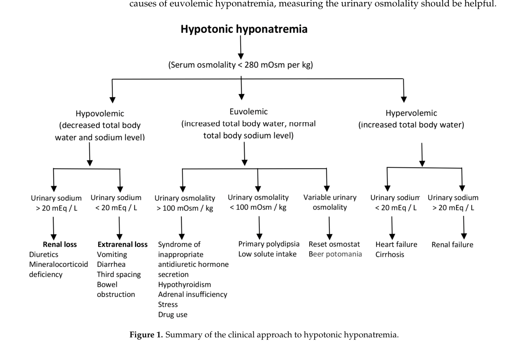

Water intoxication is an acquired toxic disorder in which intake of water or other low-solute fluid exceeds the kidney's capacity to excrete electrolyte-free water. The retained free water dilutes extracellular sodium and lowers effective osmolality, and water then moves down the osmotic gradient into cells. Because the brain is enclosed, that cellular swelling raises intracranial pressure, which is what produces the clinical syndrome: nausea and headache early, then confusion, seizures, coma, and in severe cases brainstem herniation and death. The two best-documented exposure contexts are compulsive drinking in psychiatric illness and overdrinking during endurance exercise, where non-osmotic vasopressin release reduces free-water clearance at the same time intake rises. A second, iatrogenic injury follows from correcting the sodium too quickly, producing osmotic demyelination.
Ask a research question about Water Intoxication. OpenScientist will conduct autonomous deep research using the Disorder Mechanisms Knowledge Base and PubMed literature (typically 10-30 minutes).
Do not include personal health information in your question. Questions and results are cached in your browser's local storage.
Conditions with similar clinical presentations that must be differentiated from Water Intoxication:
name: Water Intoxication
creation_date: "2026-10-06T21:33:56Z"
category: Environmental
categories:
- Toxic Exposure Disorder
- Electrolyte and Osmoregulatory Disorder
- Environmental Health Disorder
synonyms:
- water poisoning
- acute water intoxication
- self-induced water intoxication
- dilutional hyponatremia
description: >-
Water intoxication is an acquired toxic disorder in which intake of water or
other low-solute fluid exceeds the kidney's capacity to excrete
electrolyte-free water. The retained free water dilutes extracellular sodium
and lowers effective osmolality, and water then moves down the osmotic gradient
into cells. Because the brain is enclosed, that cellular swelling raises
intracranial pressure, which is what produces the clinical syndrome: nausea and
headache early, then confusion, seizures, coma, and in severe cases brainstem
herniation and death. The two best-documented exposure contexts are compulsive
drinking in psychiatric illness and overdrinking during endurance exercise,
where non-osmotic vasopressin release reduces free-water clearance at the same
time intake rises. A second, iatrogenic injury follows from correcting the
sodium too quickly, producing osmotic demyelination.
disease_term:
preferred_term: water intoxication
term:
id: MONDO:0022007
label: water intoxication
mappings:
mondo_mappings:
- term:
id: MONDO:0022007
label: water intoxication
mapping_predicate: skos:exactMatch
mapping_source: MONDO
mapping_justification: Primary MONDO disease identifier for water intoxication.
classifications:
harrisons_chapter:
- classification_value: POISONING_ENVENOMATION
evidence:
- reference: PMID:40161073
reference_title: "Unexplained Coma and Sudden Death in Psychiatric Patients Due to Self-Induced Water Intoxication: Clinical Insights and Autopsy Findings From Two Fatal Cases."
supports: SUPPORT
evidence_source: HUMAN_CLINICAL
snippet: "Self-induced water intoxication is a life-threatening condition caused by excessive water intake that surpasses renal excretion capacity, resulting in hypotonic hyponatremia."
explanation: Identifies the disorder as an exposure-driven toxic condition defined by an intake that exceeds excretory capacity, supporting the primary Harrison's home in Poisoning, Drug Overdose, and Envenomation.
- classification_value: NEUROLOGIC
evidence:
- reference: PMID:40161073
reference_title: "Unexplained Coma and Sudden Death in Psychiatric Patients Due to Self-Induced Water Intoxication: Clinical Insights and Autopsy Findings From Two Fatal Cases."
supports: SUPPORT
evidence_source: HUMAN_CLINICAL
snippet: "Clinically, self-induced water intoxication typically presents as rapidly progressing hyponatremic encephalopathy."
explanation: Supports a secondary neurologic classification because the clinical syndrome and the cause of death are both neurological.
- classification_value: KIDNEY_URINARY_TRACT
evidence:
- reference: PMID:40913680
reference_title: "Pathophysiology and treatment of exercise-associated hyponatremia."
supports: SUPPORT
evidence_source: OTHER
snippet: "AVP promotes water reabsorption in the kidneys, reducing urine output and contributing to fluid retention."
explanation: Supports a renal classification because the disease is defined by renal free-water clearance being exceeded, and vasopressin acting on the kidney is the modifiable upstream step.
definitions:
- name: Clinical case definition for water intoxication
definition_type: CASE_DEFINITION
description: >-
Water intoxication is excess electrolyte-free water relative to renal
excretory capacity, producing hypotonic hyponatremia and, when sufficiently
rapid or severe, hyponatremic encephalopathy. It is not a synonym for
hyponatremia in general, which can also arise from sodium loss, organ
failure, inappropriate antidiuresis, or non-hypotonic mechanisms.
scope: Disease-level framing, distinguishing water intoxication from hyponatremia of other causes
evidence:
- reference: PMID:40161073
reference_title: "Unexplained Coma and Sudden Death in Psychiatric Patients Due to Self-Induced Water Intoxication: Clinical Insights and Autopsy Findings From Two Fatal Cases."
supports: SUPPORT
evidence_source: HUMAN_CLINICAL
snippet: "Self-induced water intoxication is a life-threatening condition caused by excessive water intake that surpasses renal excretion capacity, resulting in hypotonic hyponatremia."
explanation: Supports the defining relation of intake exceeding excretory capacity, which is what separates this disorder from hyponatremia generally.
- reference: PMID:40913680
reference_title: "Pathophysiology and treatment of exercise-associated hyponatremia."
supports: SUPPORT
evidence_source: OTHER
snippet: "This overhydration can lead to a state where the body's capacity to excrete the excess water, by sweating, urine and insensible losses (mainly respiratory and gastrointestinal), is overwhelmed, resulting in dilutional hyponatremia."
explanation: Supports the same defining relation in the exercise context, and names the result as dilutional hyponatremia specifically.
- name: Laboratory and severity classification used in management
definition_type: DIAGNOSTIC_CRITERIA
description: >-
Management classifies the hyponatremia three ways at once: by serum sodium
(mild 130 to under 135, moderate 125 to under 130, severe under 125 mmol/L),
by duration (acute under 48 hours, chronic 48 hours or longer or unknown),
and by severity of neurological symptoms. All three are needed, because the
treatment and the osmotic-demyelination risk follow from the combination
rather than from the sodium alone.
scope: Laboratory and clinical classification driving treatment choice
evidence:
- reference: PMID:39847310
reference_title: "Treatment of hyponatremia: comprehension and best clinical practice."
supports: SUPPORT
evidence_source: OTHER
snippet: "Clinicians must understand these three classifications not only for diagnosis but also for treatment"
explanation: Supports that the three-axis classification is required for treatment decisions and not merely descriptive.
- reference: PMID:39847310
reference_title: "Treatment of hyponatremia: comprehension and best clinical practice."
supports: SUPPORT
evidence_source: OTHER
snippet: "Correct promptly with hypertonic saline (usually 3% saline) if acute and symptomatic (moderate-to-severe)."
explanation: Supports that the acute and symptomatic combination is what selects prompt hypertonic saline, the decision the classification exists to make.
parents:
- poisoning
has_subtypes:
- name: Psychogenic Water Intoxication
display_name: Water intoxication from compulsive drinking in psychiatric illness
description: >-
Compulsive or delusionally driven water drinking, most often in schizophrenia
and related disorders, sustained long enough to overwhelm free-water
excretion. Risk is compounded by inadequate supervision, by psychotropic
medication that impairs urinary dilution, and by the patient not perceiving
the intake as abnormal. Among people with schizophrenia and polydipsia,
roughly a fifth go on to severe hyponatremia.
evidence:
- reference: PMID:37809219
reference_title: "The Catastrophic Effects of Psychogenic Polydipsia: A Case Report."
supports: SUPPORT
evidence_source: HUMAN_CLINICAL
snippet: "Recent studies indicate that between 11-20% of patients with schizophrenia have associated psychogenic polydipsia"
explanation: Supports the scale of polydipsia in the psychiatric population that this subtype arises from.
- reference: PMID:37809219
reference_title: "The Catastrophic Effects of Psychogenic Polydipsia: A Case Report."
supports: SUPPORT
evidence_source: HUMAN_CLINICAL
snippet: "Among patients with this association, approximately 20% will develop severe hyponatremia, a potentially fatal condition"
explanation: Supports the progression from polydipsia to severe hyponatremia in a substantial minority.
- reference: PMID:38076665
reference_title: "Rhabdomyolysis Complicated with Hyponatremia Due to Water Intoxication and Severe Aspiration Pneumonia: Description of a Patient with Chronic Schizophrenia and Literature Review."
supports: SUPPORT
evidence_source: HUMAN_CLINICAL
snippet: "Hyponatremia due to water intoxication is frequently observed in patients with chronic schizophrenia."
explanation: Independent support for chronic schizophrenia as a recurring context for this form of the disease.
- name: Exercise-Associated Water Intoxication
display_name: Exercise-associated hyponatremia
description: >-
Overdrinking during prolonged exertion, where excessive hypotonic fluid
intake coincides with non-osmotic vasopressin release provoked by exercise,
pain, nausea, and inflammatory signalling. Sodium loss in sweat contributes
less than was once assumed. Symptomatic cases are rare in absolute terms,
under 1% of marathon runners, but the denominator is large.
evidence:
- reference: PMID:40913680
reference_title: "Pathophysiology and treatment of exercise-associated hyponatremia."
supports: SUPPORT
evidence_source: OTHER
snippet: "The pathophysiology of EAH is multifactorial and includes excessive fluid intake and non-osmotic arginine vasopressin secretion, which is induced by physical activity."
explanation: Supports the defining two-component mechanism of this subtype, intake plus exercise-induced antidiuresis.
- reference: PMID:40913680
reference_title: "Pathophysiology and treatment of exercise-associated hyponatremia."
supports: SUPPORT
evidence_source: OTHER
snippet: "symptomatic EAH is rare, occurring for instance in less than 1% of marathon runners"
explanation: Quantifies the rarity of the symptomatic form in the endurance-exercise population.
- reference: PMID:40913680
reference_title: "Pathophysiology and treatment of exercise-associated hyponatremia."
supports: SUPPORT
evidence_source: OTHER
snippet: "Sodium loss through sweat appears to play a less important role in contributing to EAH."
explanation: Supports that this subtype is a water-excess disorder rather than primarily a salt-loss disorder.
progression:
- phase: Accumulating free-water excess
notes: >-
Intake exceeds excretion for hours to days before symptoms appear. In
psychiatric cases large intake can continue without obvious clinical
consequence until sodium falls far enough to matter.
evidence:
- reference: PMID:37809219
reference_title: "The Catastrophic Effects of Psychogenic Polydipsia: A Case Report."
supports: SUPPORT
evidence_source: HUMAN_CLINICAL
snippet: "the patient had a history of hyponatremia attributed to excessive fluid intake, with a reported consumption of 16-17 glasses of water per day"
explanation: Supports a sustained high-intake phase preceding the acute presentation.
- phase: Hyponatremic encephalopathy
notes: >-
Once sodium falls sufficiently or rapidly, nonspecific nausea and headache
give way to confusion, seizures and coma. Hyponatremia acquired within 48
hours is conventionally classed as acute, which is the window in which
cerebral adaptation has not yet occurred.
evidence:
- reference: PMID:40161073
reference_title: "Unexplained Coma and Sudden Death in Psychiatric Patients Due to Self-Induced Water Intoxication: Clinical Insights and Autopsy Findings From Two Fatal Cases."
supports: SUPPORT
evidence_source: HUMAN_CLINICAL
snippet: "Clinically, self-induced water intoxication typically presents as rapidly progressing hyponatremic encephalopathy."
explanation: Supports a rapidly progressive encephalopathic phase as the characteristic clinical course.
- reference: PMID:40161073
reference_title: "Unexplained Coma and Sudden Death in Psychiatric Patients Due to Self-Induced Water Intoxication: Clinical Insights and Autopsy Findings From Two Fatal Cases."
supports: SUPPORT
evidence_source: HUMAN_CLINICAL
snippet: "If the condition worsens, seizures, coma, and significant brain swelling may occur, often resulting in fatal outcomes."
explanation: Supports the ordered worsening through seizures and coma to a fatal outcome.
- phase: Water diuresis during recovery
notes: >-
When intake stops and vasopressin is suppressed, a brisk water diuresis
follows and serum sodium can rise fast without any treatment. This is the
phase in which inadvertent overcorrection happens, so urine output and sodium
both need watching.
evidence:
- reference: PMID:37809219
reference_title: "The Catastrophic Effects of Psychogenic Polydipsia: A Case Report."
supports: SUPPORT
evidence_source: HUMAN_CLINICAL
snippet: "Desmopressin acetate (DDAVP) was administered to slow the correction rate."
explanation: Supports that the recovery diuresis can correct sodium faster than intended, to the point of requiring pharmacological braking.
- reference: PMID:39847310
reference_title: "Treatment of hyponatremia: comprehension and best clinical practice."
supports: SUPPORT
evidence_source: OTHER
snippet: "Overly rapid correction can be prevented by closely monitoring the serum"
explanation: Supports monitoring during this phase as the means of preventing overly rapid correction.
pathophysiology:
- name: Free-water intake exceeding renal excretory capacity
description: >-
The initiating state is a quantity of ingested or administered low-solute
fluid larger than the kidney can clear as electrolyte-free water. An intact
kidney tolerates a substantial water load, so this is a relation between
intake and capacity rather than an absolute volume, and the threshold is
individual.
biological_scale: ORGANISM
locations:
- preferred_term: kidney
term:
id: UBERON:0002113
label: kidney
chemical_entities:
- preferred_term: water
term:
id: CHEBI:15377
label: water
biological_processes:
- preferred_term: renal water homeostasis
modifier: DYSREGULATED
term:
id: GO:0003091
label: renal water homeostasis
evidence:
- reference: PMID:40161073
reference_title: "Unexplained Coma and Sudden Death in Psychiatric Patients Due to Self-Induced Water Intoxication: Clinical Insights and Autopsy Findings From Two Fatal Cases."
supports: SUPPORT
evidence_source: HUMAN_CLINICAL
snippet: "Self-induced water intoxication is a life-threatening condition caused by excessive water intake that surpasses renal excretion capacity, resulting in hypotonic hyponatremia."
explanation: Directly supports intake exceeding renal excretory capacity as the initiating lesion.
- reference: PMID:40913680
reference_title: "Pathophysiology and treatment of exercise-associated hyponatremia."
supports: SUPPORT
evidence_source: OTHER
snippet: "This overhydration can lead to a state where the body's capacity to excrete the excess water, by sweating, urine and insensible losses (mainly respiratory and gastrointestinal), is overwhelmed, resulting in dilutional hyponatremia."
explanation: Supports the same relation and names every route by which free water can leave, which is what capacity means here.
downstream:
- target: Net electrolyte-free water retention
causal_link_type: DIRECT
description: Water that cannot be excreted is retained in body fluid.
evidence:
- reference: PMID:40913680
reference_title: "Pathophysiology and treatment of exercise-associated hyponatremia."
supports: SUPPORT
evidence_source: OTHER
snippet: "This overhydration can lead to a state where the body's capacity to excrete the excess water, by sweating, urine and insensible losses (mainly respiratory and gastrointestinal), is overwhelmed, resulting in dilutional hyponatremia."
explanation: The quoted sentence states the step from an overwhelmed excretory capacity to a dilutional result.
- name: Non-osmotic vasopressin release and reduced free-water clearance
description: >-
Vasopressin promotes water reabsorption in the collecting duct, lowering
urine output. During exertion it is released for non-osmotic reasons such as
physical stress, pain, nausea and hypoglycemia, with interleukin-6 proposed as
an additional driver. What is normally a volume-protective reflex becomes
maladaptive when intake is already excessive, because it removes the one
defence against a water load.
biological_scale: ORGANISM
locations:
- preferred_term: collecting duct of renal tubule
term:
id: UBERON:0001232
label: collecting duct of renal tubule
cell_types:
- preferred_term: kidney collecting duct principal cell
term:
id: CL:1001431
label: kidney collecting duct principal cell
biological_processes:
- preferred_term: renal water absorption
modifier: INCREASED
term:
id: GO:0070295
label: renal water absorption
- preferred_term: regulation of urine volume
modifier: DYSREGULATED
term:
id: GO:0035809
label: regulation of urine volume
evidence:
- reference: PMID:40913680
reference_title: "Pathophysiology and treatment of exercise-associated hyponatremia."
supports: SUPPORT
evidence_source: OTHER
snippet: "AVP promotes water reabsorption in the kidneys, reducing urine output and contributing to fluid retention."
explanation: Directly supports vasopressin-driven renal water reabsorption as the mechanism reducing free-water clearance.
- reference: PMID:40913680
reference_title: "Pathophysiology and treatment of exercise-associated hyponatremia."
supports: SUPPORT
evidence_source: OTHER
snippet: "During prolonged exercise, AVP secretion can be stimulated by non-osmotic factors such as physical stress, pain, nausea, and hypoglycemia, leading to water retention despite a hypotonic plasma state."
explanation: Supports non-osmotic vasopressin release persisting against a hypotonic plasma, which is what makes it pathological here.
notes: >-
This node is a modifier of capacity rather than a requirement for the
disease. In pure polydipsia vasopressin is appropriately suppressed and water
intake alone can still exceed excretory capacity, so the entry routes this
node into the same retention step rather than making it obligatory.
downstream:
- target: Net electrolyte-free water retention
causal_link_type: DIRECT
description: Reduced free-water clearance adds to retention for any given intake.
evidence:
- reference: PMID:40913680
reference_title: "Pathophysiology and treatment of exercise-associated hyponatremia."
supports: SUPPORT
evidence_source: OTHER
snippet: "leading to water retention despite a hypotonic plasma state"
explanation: The quoted fragment states the step from non-osmotic vasopressin activity to water retention.
- name: Net electrolyte-free water retention
description: >-
Retained free water distributes through body fluid and dilutes it. Because
the water carries no solute, extracellular sodium concentration and effective
osmolality both fall. Operationally this is serum sodium below 135 mmol/L
with serum osmolality below 275 mOsm/kg.
biological_scale: ORGANISM
biological_processes:
- preferred_term: sodium ion homeostasis
modifier: DECREASED
term:
id: GO:0055078
label: sodium ion homeostasis
chemical_entities:
- preferred_term: sodium(1+)
modifier: DECREASED
term:
id: CHEBI:29101
label: sodium(1+)
evidence:
- reference: PMID:40603486
reference_title: "Effect of experimental hypoosmolar hyponatremia on the blood brain barrier and brain edema formation."
supports: SUPPORT
quote_role: BACKGROUND
evidence_source: HUMAN_CLINICAL
snippet: "The most frequent cause of hyponatremia is water retention due to the increase in blood levels of antidiuretic hormone"
explanation: >-
Background statement of the human clinical picture from the introduction of
a rat study; it describes the usual cause of hyponatremia in people, not
the rat experiment, so it is graded from the quoted text and marked
BACKGROUND.
- reference: PMID:40161073
reference_title: "Unexplained Coma and Sudden Death in Psychiatric Patients Due to Self-Induced Water Intoxication: Clinical Insights and Autopsy Findings From Two Fatal Cases."
supports: SUPPORT
evidence_source: HUMAN_CLINICAL
snippet: "Laboratory tests revealed severe hyponatremia (117.5 mEq/L) and hypokalemia (3.0 mEq/L), with creatinine at 0.7 mg/dL, and plasma osmolality at 251 mOsm/kg, confirming a picture of water intoxication."
explanation: Human laboratory confirmation of the combined low sodium and low osmolality that defines this node, with normal creatinine excluding renal failure as the cause.
downstream:
- target: Osmotic water shift into cells
causal_link_type: DIRECT
description: A fall in extracellular osmolality drives water across cell membranes into the intracellular space.
evidence:
- reference: PMID:40161073
reference_title: "Unexplained Coma and Sudden Death in Psychiatric Patients Due to Self-Induced Water Intoxication: Clinical Insights and Autopsy Findings From Two Fatal Cases."
supports: SUPPORT
evidence_source: HUMAN_CLINICAL
snippet: "When the concentration of sodium in the bloodstream becomes too low, water moves into cells to restore balance."
explanation: The quoted sentence states the causal step from low extracellular sodium to water entering cells.
- target: Hyponatremia
causal_link_type: DIRECT
description: The retention presents as a measurably low serum sodium concentration.
evidence:
- reference: PMID:40913680
reference_title: "Pathophysiology and treatment of exercise-associated hyponatremia."
supports: SUPPORT
evidence_source: OTHER
snippet: "is overwhelmed, resulting in dilutional hyponatremia"
explanation: The quoted fragment names the laboratory abnormality that results once excretory capacity is overwhelmed.
- target: Pulmonary edema
causal_link_type: INDIRECT_UNKNOWN_INTERMEDIATES
description: >-
The source presents cerebral and pulmonary edema as parallel consequences
of the same osmotic imbalance rather than one causing the other, so the
edge is drawn from the retention node. The route to the pulmonary
component is not established in the sources used here.
evidence:
- reference: PMID:40161073
reference_title: "Unexplained Coma and Sudden Death in Psychiatric Patients Due to Self-Induced Water Intoxication: Clinical Insights and Autopsy Findings From Two Fatal Cases."
supports: SUPPORT
directness: INDIRECT
evidence_source: HUMAN_CLINICAL
snippet: "This acute imbalance leads to cerebral and pulmonary edema, neurological deterioration, and potentially fatal outcomes."
explanation: >-
Attributes both edemas to the osmotic imbalance this node represents.
Graded INDIRECT, and typed as having unknown intermediates, because the
source does not state the route to the pulmonary component.
- target: Rhabdomyolysis
causal_link_type: INDIRECT_KNOWN_INTERMEDIATES
description: >-
Hypotonicity imposes osmotic stress on skeletal muscle membranes, which
through reactive oxygen species and calcium-activated proteolysis can cause
myocyte breakdown.
evidence:
- reference: PMID:40913680
reference_title: "Pathophysiology and treatment of exercise-associated hyponatremia."
supports: SUPPORT
evidence_source: OTHER
snippet: "Rhabdomyolysis can result from osmotic shock of skeletal muscle membrane, the activation of reactive oxygen, and increased intracellular calcium, which activate proteases and cause cellular breakdown"
explanation: Supports the step from osmotic stress to muscle breakdown, naming the intermediates, which is why the link is typed as having known intermediates.
- name: Osmotic water shift into cells
description: >-
Water follows the osmotic gradient into the intracellular compartment. This
is the cytotoxic mechanism of brain swelling in hyponatremia and is the
well-established part of the pathway; whether a vasogenic component also
contributes is not settled. In rats given an acute water load, brain water
rose to 79.4 to 79.5% against 78.3% in shams, while fluorescein testing
showed no detectable barrier leakage.
biological_scale: CELLULAR
cell_types:
- preferred_term: astrocyte
term:
id: CL:0000127
label: astrocyte
- preferred_term: neuron
term:
id: CL:0000540
label: neuron
biological_processes:
- preferred_term: cellular hypotonic response
modifier: INCREASED
term:
id: GO:0071476
label: cellular hypotonic response
- preferred_term: cell volume homeostasis
modifier: DYSREGULATED
term:
id: GO:0006884
label: cell volume homeostasis
evidence:
- reference: PMID:40161073
reference_title: "Unexplained Coma and Sudden Death in Psychiatric Patients Due to Self-Induced Water Intoxication: Clinical Insights and Autopsy Findings From Two Fatal Cases."
supports: SUPPORT
evidence_source: HUMAN_CLINICAL
snippet: "This shift is particularly harmful in brain cells, causing cerebral edema, or swelling of the brain, as the cells absorb too much water"
explanation: Supports the osmotic shift into brain cells as the harmful consequence, and why the brain is the organ that matters.
- reference: PMID:40603486
reference_title: "Effect of experimental hypoosmolar hyponatremia on the blood brain barrier and brain edema formation."
supports: SUPPORT
quote_role: BACKGROUND
evidence_source: HUMAN_CLINICAL
snippet: "Although the cytotoxic mechanism of brain edema in hyponatremia is commonly known, the role of a vasogenic mechanism is ambiguous."
explanation: >-
Background statement of what is and is not established about brain edema in
hyponatremia, from the introduction of a rat study rather than from its
results, so it is marked BACKGROUND.
- reference: PMID:40603486
reference_title: "Effect of experimental hypoosmolar hyponatremia on the blood brain barrier and brain edema formation."
supports: SUPPORT
quote_role: PRIMARY_RESULT
evidence_source: MODEL_ORGANISM
snippet: "Hypoosmotic acute hyponatremia led to increased brain water content and downregulation of tight junction gene expression, although leakage of the BBB was not observed."
explanation: >-
The rat study's own result, and the citation behind this node's note: brain
water rose and junctional transcripts fell, while no barrier leak was
detectable, which is why only the cytotoxic mechanism is asserted here.
notes: >-
The vasogenic question is left open deliberately. The same experimental study
found tight-junction transcripts (Ocln, Tjp1, and Cldn5 after vasopressin)
fell in cortex, yet no functional barrier leak was detectable by fluorescein,
and its authors state that reduced junctional transcripts are not proof of a
clinically important vasogenic leak. Astrocytic AQP4 is experimentally
implicated in part of the water flux but is not an approved treatment target.
downstream:
- target: Cerebral edema with raised intracranial pressure
causal_link_type: DIRECT
description: Swelling of brain cells inside a closed cranium raises intracranial pressure.
evidence:
- reference: PMID:40161073
reference_title: "Unexplained Coma and Sudden Death in Psychiatric Patients Due to Self-Induced Water Intoxication: Clinical Insights and Autopsy Findings From Two Fatal Cases."
supports: SUPPORT
evidence_source: HUMAN_CLINICAL
snippet: "The brain cells swell, causing increased intracranial pressure, which can damage brain tissue."
explanation: The quoted sentence states the causal step from cell swelling to raised intracranial pressure and tissue damage.
- name: Cerebral edema with raised intracranial pressure
description: >-
Brain swelling against a fixed cranial volume raises intracranial pressure,
and essentially the whole symptom set of this disease follows from that
pressure rather than from the sodium value itself. In a mouse model, severe
water loading raised intracranial pressure and mean arterial pressure until
brainstem herniation occurred at about 23 minutes; a milder protocol raised
pressure to a sustained pathological level without herniation.
biological_scale: TISSUE
locations:
- preferred_term: brain
term:
id: UBERON:0000955
label: brain
cell_types:
- preferred_term: astrocyte
term:
id: CL:0000127
label: astrocyte
biological_processes:
- preferred_term: water transport
modifier: INCREASED
term:
id: GO:0006833
label: water transport
evidence:
- reference: PMID:40913680
reference_title: "Pathophysiology and treatment of exercise-associated hyponatremia."
supports: SUPPORT
evidence_source: OTHER
snippet: "Nearly all symptoms are neurological and are due to increased intracranial pressure from cellular edema."
explanation: Directly supports raised intracranial pressure from cellular edema as the proximate cause of essentially the whole clinical picture.
- reference: PMID:31534063
reference_title: "A new experimental mouse model of water intoxication with sustained increased intracranial pressure and mild hyponatremia without side effects of antidiuretics."
supports: SUPPORT
evidence_source: MODEL_ORGANISM
snippet: "By severe WI, ICP and mean arterial pressure increased until brain stem herniation occurred (23"
explanation: Experimental support for the progression from a water load to measured intracranial pressure rise and herniation, with its timing.
- reference: PMID:40161073
reference_title: "Unexplained Coma and Sudden Death in Psychiatric Patients Due to Self-Induced Water Intoxication: Clinical Insights and Autopsy Findings From Two Fatal Cases."
supports: SUPPORT
evidence_source: HUMAN_CLINICAL
snippet: "A computed tomography (CT) of the brain showed diffuse cerebral edema without signs of herniation."
explanation: Human imaging confirmation of diffuse cerebral edema in a fatal case, in that instance without radiological herniation.
downstream:
- target: Hyponatremic encephalopathy
causal_link_type: DIRECT
description: Raised pressure and tissue injury produce the encephalopathic syndrome.
evidence:
- reference: PMID:40161073
reference_title: "Unexplained Coma and Sudden Death in Psychiatric Patients Due to Self-Induced Water Intoxication: Clinical Insights and Autopsy Findings From Two Fatal Cases."
supports: SUPPORT
evidence_source: HUMAN_CLINICAL
snippet: "Clinically, self-induced water intoxication typically presents as rapidly progressing hyponatremic encephalopathy."
explanation: Supports the step from brain swelling to the clinically recognized hyponatremic encephalopathy.
- target: Increased intracranial pressure
causal_link_type: DIRECT
description: The pressure rise is itself a measurable clinical finding.
evidence:
- reference: PMID:40913680
reference_title: "Pathophysiology and treatment of exercise-associated hyponatremia."
supports: SUPPORT
evidence_source: OTHER
snippet: "Symptoms, which are due to increased intracranial pressure, may vary from nausea, vomiting, headache, confusion to severe alterations in cognitive functions, decorticate posturing, respiratory distress, coma and even death."
explanation: Supports raised intracranial pressure as the clinical finding from which the graded symptom range follows.
- name: Hyponatremic encephalopathy
description: >-
The clinical expression of brain swelling, graded by neurological severity
rather than by sodium alone: difficulty concentrating and headache at the
mild end, disorientation and gait instability in the middle, and coma,
obtundation, seizures and respiratory distress at the severe end. Autopsy in
fatal cases shows diffuse cerebral edema with diffuse axonal injury and
reactive astrogliosis.
biological_scale: ORGANISM
locations:
- preferred_term: brain
term:
id: UBERON:0000955
label: brain
- preferred_term: brainstem
term:
id: UBERON:0002298
label: brainstem
cell_types:
- preferred_term: neuron
term:
id: CL:0000540
label: neuron
evidence:
- reference: PMID:40161073
reference_title: "Unexplained Coma and Sudden Death in Psychiatric Patients Due to Self-Induced Water Intoxication: Clinical Insights and Autopsy Findings From Two Fatal Cases."
supports: SUPPORT
evidence_source: HUMAN_CLINICAL
snippet: "Autopsy findings revealed diffuse cerebral edema, pulmonary congestion, and diffuse axonal injury with reactive astrogliosis"
explanation: Directly supports the neuropathological substrate of the encephalopathy in fatal human cases.
- reference: PMID:40618460
reference_title: "Analysis on forensic pathology of water intoxication: A review."
supports: SUPPORT
quote_role: REVIEW_SYNTHESIS
evidence_source: HUMAN_CLINICAL
snippet: "Histological findings included neuronal degeneration characterized by lax core chromatin, enlarged nerve cells, and perivascular spaces, often associated with neuronal necrosis."
explanation: Independent forensic review support for neuronal degeneration and necrosis as the histological correlate.
downstream:
- target: Seizure
causal_link_type: DIRECT
description: Encephalopathy from brain swelling precipitates generalized seizures.
evidence:
- reference: PMID:37809219
reference_title: "The Catastrophic Effects of Psychogenic Polydipsia: A Case Report."
supports: SUPPORT
evidence_source: HUMAN_CLINICAL
snippet: "Patients with hyponatremia are at risk of severe complications including seizures, coma, and death."
explanation: Supports seizures as a severe complication arising from the hyponatremic state.
- target: Coma
causal_link_type: DIRECT
description: Progressive encephalopathy depresses consciousness to coma.
evidence:
- reference: PMID:40161073
reference_title: "Unexplained Coma and Sudden Death in Psychiatric Patients Due to Self-Induced Water Intoxication: Clinical Insights and Autopsy Findings From Two Fatal Cases."
supports: SUPPORT
evidence_source: HUMAN_CLINICAL
snippet: "If the condition worsens, seizures, coma, and significant brain swelling may occur, often resulting in fatal outcomes."
explanation: Supports coma as a stage in the worsening of the encephalopathy.
- target: Headache
causal_link_type: DIRECT
description: Raised intracranial pressure produces headache, often an early feature.
evidence:
- reference: PMID:40913680
reference_title: "Pathophysiology and treatment of exercise-associated hyponatremia."
supports: SUPPORT
evidence_source: OTHER
snippet: "Symptoms, which are due to increased intracranial pressure, may vary from nausea, vomiting, headache, confusion to severe alterations in cognitive functions, decorticate posturing, respiratory distress, coma and even death."
explanation: Supports headache within the pressure-driven symptom range.
- target: Nausea and vomiting
causal_link_type: DIRECT
description: Nausea and vomiting are early pressure-driven manifestations.
evidence:
- reference: PMID:40913680
reference_title: "Pathophysiology and treatment of exercise-associated hyponatremia."
supports: SUPPORT
evidence_source: OTHER
snippet: "Symptoms, which are due to increased intracranial pressure, may vary from nausea, vomiting, headache, confusion to severe alterations in cognitive functions, decorticate posturing, respiratory distress, coma and even death."
explanation: Supports nausea and vomiting within the pressure-driven symptom range.
- target: Confusion
causal_link_type: DIRECT
description: Altered mental status and disorientation mark the moderate tier of severity.
evidence:
- reference: PMID:40913680
reference_title: "Pathophysiology and treatment of exercise-associated hyponatremia."
supports: SUPPORT
evidence_source: OTHER
snippet: "Symptoms, which are due to increased intracranial pressure, may vary from nausea, vomiting, headache, confusion to severe alterations in cognitive functions, decorticate posturing, respiratory distress, coma and even death."
explanation: Supports confusion within the pressure-driven symptom range.
- name: Osmotic demyelination after overly rapid correction
description: >-
A separate, iatrogenic branch. Once hypotonicity has persisted, brain cells
adapt by extruding osmolytes; restoring tonicity faster than that adaptation
can reverse causes demyelination, classically central pontine myelinolysis.
This is why guidelines impose an upper correction limit, and why
overcorrection is answered by deliberately re-lowering sodium with dextrose
or desmopressin. In acute symptomatic water intoxication the adaptation has
not yet occurred, so the limit is relaxed in favour of treating the brain
swelling.
biological_scale: TISSUE
locations:
- preferred_term: brainstem
term:
id: UBERON:0002298
label: brainstem
biological_processes:
- preferred_term: myelination
modifier: DECREASED
term:
id: GO:0042552
label: myelination
evidence:
- reference: PMID:40161073
reference_title: "Unexplained Coma and Sudden Death in Psychiatric Patients Due to Self-Induced Water Intoxication: Clinical Insights and Autopsy Findings From Two Fatal Cases."
supports: SUPPORT
evidence_source: HUMAN_CLINICAL
snippet: "Central pontine myelinolysis, a condition involving the breakdown of myelin in the brainstem, has also been observed in some cases. However, it is often linked to improper management, such as correcting sodium levels too quickly."
explanation: Directly supports central pontine myelinolysis as a complication of the correction rather than of the intoxication itself.
- reference: PMID:39847310
reference_title: "Treatment of hyponatremia: comprehension and best clinical practice."
supports: SUPPORT
evidence_source: OTHER
snippet: "Adhere to upper correction limit if in patients at high risk for developing osmotic demyelination syndrome (ODS), except in acute/symptomatic (moderate-to-severe) cases."
explanation: Supports both the correction limit and the explicit carve-out for acute symptomatic cases, which is the clinical shape of this risk.
notes: >-
Modeled as a pathophysiology node rather than a treatment complication note
because it is a distinct tissue-level lesion with its own mechanism, and
because it is the reason the treatment of this disease is constrained. It has
no incoming causal edge from the rest of the graph on purpose: its trigger is
an intervention, which the entry represents through the hypertonic saline
treatment's target_mechanisms link rather than as a disease edge.
phenotypes:
- name: Hyponatremia
category: Laboratory
description: >-
Serum sodium below 135 mmol/L with serum osmolality below 275 mOsm/kg is the
defining laboratory abnormality. Severity tiers used in management are mild
130 to under 135, moderate 125 to under 130, and severe under 125 mmol/L.
Fatal cases are typically well below 120.
phenotype_term:
preferred_term: Hyponatremia
term:
id: HP:0002902
label: Hyponatremia
evidence:
- reference: PMID:40161073
reference_title: "Unexplained Coma and Sudden Death in Psychiatric Patients Due to Self-Induced Water Intoxication: Clinical Insights and Autopsy Findings From Two Fatal Cases."
supports: SUPPORT
evidence_source: HUMAN_CLINICAL
snippet: "Both cases highlight the connection between psychiatric disorders and severe hyponatremia"
explanation: Supports severe hyponatremia as the defining abnormality in fatal water intoxication.
- reference: PMID:40161073
reference_title: "Unexplained Coma and Sudden Death in Psychiatric Patients Due to Self-Induced Water Intoxication: Clinical Insights and Autopsy Findings From Two Fatal Cases."
supports: SUPPORT
evidence_source: HUMAN_CLINICAL
snippet: "Laboratory tests revealed severe hyponatremia (117.5 mEq/L) and hypokalemia (3.0 mEq/L), with creatinine at 0.7 mg/dL, and plasma osmolality at 251 mOsm/kg, confirming a picture of water intoxication."
explanation: Provides an individual measurement of the sodium and osmolality combination in a confirmed case.
- name: Polydipsia
category: Behavioral
subtype: Psychogenic Water Intoxication
description: >-
Excessive thirst and fluid consumption, driving the intake that causes the
disease. It is the risk-associated behaviour rather than a consequence, and it
is not universal: exercise-associated cases are driven by advice to drink
rather than by pathological thirst.
phenotype_term:
preferred_term: Polydipsia
term:
id: HP:0001959
label: Polydipsia
evidence:
- reference: PMID:37809219
reference_title: "The Catastrophic Effects of Psychogenic Polydipsia: A Case Report."
supports: SUPPORT
evidence_source: HUMAN_CLINICAL
snippet: "Polydipsia is characterized by excessive thirst and fluid consumption, leading to polyuria with diluted urine"
explanation: Defines the behaviour and its renal consequence.
- reference: PMID:37809219
reference_title: "The Catastrophic Effects of Psychogenic Polydipsia: A Case Report."
supports: SUPPORT
evidence_source: HUMAN_CLINICAL
snippet: "Polydipsia increases the risk of death by 74% in patients with schizophrenia"
explanation: Quantifies the mortality associated with the behaviour in the population this subtype covers.
- name: Polyuria
category: Renal
description: >-
Large dilute urine output, either as the kidney's appropriate response to a
water load or as the brisk diuresis of recovery once vasopressin is
suppressed. It can be absent or delayed when vasopressin remains active or
renal function is impaired.
phenotype_term:
preferred_term: Polyuria
term:
id: HP:0000103
label: Polyuria
evidence:
- reference: PMID:37809219
reference_title: "The Catastrophic Effects of Psychogenic Polydipsia: A Case Report."
supports: SUPPORT
evidence_source: HUMAN_CLINICAL
snippet: "Polydipsia is characterized by excessive thirst and fluid consumption, leading to polyuria with diluted urine"
explanation: Supports dilute polyuria as the renal correlate of excessive intake.
- name: Increased intracranial pressure
category: Neurologic
description: >-
The pressure rise from cellular brain swelling, which is the proximate cause
of nearly all the clinical manifestations of this disease.
phenotype_term:
preferred_term: Increased intracranial pressure
term:
id: HP:0002516
label: Increased intracranial pressure
evidence:
- reference: PMID:40913680
reference_title: "Pathophysiology and treatment of exercise-associated hyponatremia."
supports: SUPPORT
evidence_source: OTHER
snippet: "Nearly all symptoms are neurological and are due to increased intracranial pressure from cellular edema."
explanation: Supports raised intracranial pressure as the mediating finding behind the neurological syndrome.
- reference: PMID:31534063
reference_title: "A new experimental mouse model of water intoxication with sustained increased intracranial pressure and mild hyponatremia without side effects of antidiuretics."
supports: SUPPORT
evidence_source: MODEL_ORGANISM
snippet: "Following the new mild WI protocol, ICP also increased but was sustained at a pathologically high level without inducing herniation."
explanation: Experimental measurement of a sustained pathological intracranial pressure rise from water loading.
- name: Seizure
category: Neurologic
description: >-
Generalized seizures are a characteristic severe manifestation and often the
event that brings the patient to attention.
phenotype_term:
preferred_term: Seizure
term:
id: HP:0001250
label: Seizure
evidence:
- reference: PMID:37809219
reference_title: "The Catastrophic Effects of Psychogenic Polydipsia: A Case Report."
supports: SUPPORT
evidence_source: HUMAN_CLINICAL
snippet: "Patients with hyponatremia are at risk of severe complications including seizures, coma, and death."
explanation: Supports seizures among the severe complications of the hyponatremic state.
- reference: PMID:38076665
reference_title: "Rhabdomyolysis Complicated with Hyponatremia Due to Water Intoxication and Severe Aspiration Pneumonia: Description of a Patient with Chronic Schizophrenia and Literature Review."
supports: SUPPORT
evidence_source: HUMAN_CLINICAL
snippet: "He was disoriented and immediately after being returned to bed, a general tonic-clonic seizure occurred."
explanation: Individual human case in which a generalized tonic-clonic seizure occurred, the manifestation this phenotype records.
- reference: PMID:38076665
reference_title: "Rhabdomyolysis Complicated with Hyponatremia Due to Water Intoxication and Severe Aspiration Pneumonia: Description of a Patient with Chronic Schizophrenia and Literature Review."
supports: SUPPORT
evidence_source: HUMAN_CLINICAL
snippet: "Severe hyponatremia (Na 104 mEq/L) was noted and intravenous sodium correction was started."
explanation: Supplies the sodium concentration measured in that same patient, establishing the severity at which the seizure occurred.
- name: Coma
category: Neurologic
description: >-
Depressed consciousness progressing to coma marks the severe tier and may be
the presentation. Water intoxication should be considered in any unexplained
coma in a psychiatric patient.
phenotype_term:
preferred_term: Coma
term:
id: HP:0001259
label: Coma
evidence:
- reference: PMID:40161073
reference_title: "Unexplained Coma and Sudden Death in Psychiatric Patients Due to Self-Induced Water Intoxication: Clinical Insights and Autopsy Findings From Two Fatal Cases."
supports: SUPPORT
evidence_source: HUMAN_CLINICAL
snippet: "water intoxication must always be considered among the possible causes of unexplained coma or sudden death in psychiatric patients"
explanation: Supports coma as a presentation of this disorder, and the diagnostic implication that follows.
- name: Confusion
category: Neurologic
description: >-
Altered mental status and disorientation define the moderate severity tier
and are the symptoms that select a different treatment intensity.
phenotype_term:
preferred_term: Confusion
term:
id: HP:0001289
label: Confusion
evidence:
- reference: PMID:40913680
reference_title: "Pathophysiology and treatment of exercise-associated hyponatremia."
supports: SUPPORT
evidence_source: OTHER
snippet: "Symptoms, which are due to increased intracranial pressure, may vary from nausea, vomiting, headache, confusion to severe alterations in cognitive functions, decorticate posturing, respiratory distress, coma and even death."
explanation: Supports confusion within the graded pressure-driven symptom range.
- name: Headache
category: Neurologic
description: >-
An early, nonspecific manifestation of raised intracranial pressure.
phenotype_term:
preferred_term: Headache
term:
id: HP:0002315
label: Headache
evidence:
- reference: PMID:40913680
reference_title: "Pathophysiology and treatment of exercise-associated hyponatremia."
supports: SUPPORT
evidence_source: OTHER
snippet: "Symptoms, which are due to increased intracranial pressure, may vary from nausea, vomiting, headache, confusion to severe alterations in cognitive functions, decorticate posturing, respiratory distress, coma and even death."
explanation: Supports headache within the graded pressure-driven symptom range.
- name: Nausea and vomiting
category: Gastrointestinal
description: >-
Early and nonspecific, and clinically awkward: nausea is both a symptom of
the hypotonicity and a non-osmotic stimulus to vasopressin release, so it can
worsen the retention that caused it.
phenotype_term:
preferred_term: Nausea and vomiting
term:
id: HP:0002017
label: Nausea and vomiting
evidence:
- reference: PMID:40913680
reference_title: "Pathophysiology and treatment of exercise-associated hyponatremia."
supports: SUPPORT
evidence_source: OTHER
snippet: "Symptoms, which are due to increased intracranial pressure, may vary from nausea, vomiting, headache, confusion to severe alterations in cognitive functions, decorticate posturing, respiratory distress, coma and even death."
explanation: Supports nausea and vomiting within the graded pressure-driven symptom range.
- reference: PMID:40913680
reference_title: "Pathophysiology and treatment of exercise-associated hyponatremia."
supports: SUPPORT
evidence_source: OTHER
snippet: "During prolonged exercise, AVP secretion can be stimulated by non-osmotic factors such as physical stress, pain, nausea, and hypoglycemia, leading to water retention despite a hypotonic plasma state."
explanation: Supports nausea's second role as a non-osmotic vasopressin stimulus, which is what makes it mechanistically awkward rather than merely a symptom.
- name: Pulmonary edema
category: Respiratory
description: >-
Pulmonary edema accompanies the cerebral edema in severe cases and is a
consistent autopsy finding, together with pulmonary congestion and right
ventricular dilation.
phenotype_term:
preferred_term: Pulmonary edema
term:
id: HP:0100598
label: Pulmonary edema
evidence:
- reference: PMID:40161073
reference_title: "Unexplained Coma and Sudden Death in Psychiatric Patients Due to Self-Induced Water Intoxication: Clinical Insights and Autopsy Findings From Two Fatal Cases."
supports: SUPPORT
evidence_source: HUMAN_CLINICAL
snippet: "This acute imbalance leads to cerebral and pulmonary edema, neurological deterioration, and potentially fatal outcomes."
explanation: Supports pulmonary edema alongside cerebral edema as a consequence of the osmotic imbalance.
- reference: PMID:40618460
reference_title: "Analysis on forensic pathology of water intoxication: A review."
supports: SUPPORT
quote_role: REVIEW_SYNTHESIS
evidence_source: HUMAN_CLINICAL
snippet: "Analyzed cases revealed general cerebral and lung abnormalities along with significant right ventricular heart dilation."
explanation: Forensic review support for lung abnormality and right ventricular dilation as recurring post-mortem findings.
- name: Rhabdomyolysis
category: Musculoskeletal
description: >-
Muscle breakdown is a documented complication, reported both in
exercise-associated and in psychiatric water intoxication, with creatine
kinase rising into the tens of thousands.
phenotype_term:
preferred_term: Rhabdomyolysis
term:
id: HP:0003201
label: Rhabdomyolysis
evidence:
- reference: PMID:38076665
reference_title: "Rhabdomyolysis Complicated with Hyponatremia Due to Water Intoxication and Severe Aspiration Pneumonia: Description of a Patient with Chronic Schizophrenia and Literature Review."
supports: SUPPORT
evidence_source: HUMAN_CLINICAL
snippet: "a blood sample taken 36 hours later revealed an extensive elevation of creatine kinase (41,286 U/L), pointing to a possibility of rhabdomyolysis as a complication"
explanation: Individual human case quantifying the creatine kinase rise behind the rhabdomyolysis complication.
- reference: PMID:40913680
reference_title: "Pathophysiology and treatment of exercise-associated hyponatremia."
supports: SUPPORT
evidence_source: OTHER
snippet: "Rhabdomyolysis can result from osmotic shock of skeletal muscle membrane, the activation of reactive oxygen, and increased intracellular calcium, which activate proteases and cause cellular breakdown"
explanation: Supports the mechanism by which the osmotic disturbance produces muscle breakdown.
biochemical:
- name: Serum sodium concentration
presence: DECREASED
notes: >-
The central measurement, used three ways at once: to establish the diagnosis,
to grade severity, and as the quantity whose rate of change must be
constrained during treatment. Post-mortem sodium appears to be a specific
marker of recent excessive intake, with a mean of 90.4 mmol/L across five
autopsy cases.
evidence:
- reference: PMID:40618460
reference_title: "Analysis on forensic pathology of water intoxication: A review."
supports: SUPPORT
quote_role: REVIEW_SYNTHESIS
evidence_source: HUMAN_CLINICAL
snippet: "Post-mortem blood sodium level appears to be a specific marker of recent excessive liquid intake."
explanation: Supports the diagnostic value of the sodium measurement, here in the post-mortem setting.
- reference: PMID:40161073
reference_title: "Unexplained Coma and Sudden Death in Psychiatric Patients Due to Self-Induced Water Intoxication: Clinical Insights and Autopsy Findings From Two Fatal Cases."
supports: SUPPORT
evidence_source: HUMAN_CLINICAL
snippet: "Laboratory tests revealed severe hyponatremia (117.5 mEq/L) and hypokalemia (3.0 mEq/L), with creatinine at 0.7 mg/dL, and plasma osmolality at 251 mOsm/kg, confirming a picture of water intoxication."
explanation: Supports the measured low sodium in a confirmed fatal case.
- name: Serum osmolality
presence: DECREASED
notes: >-
Low serum osmolality is what makes the hyponatremia hypotonic and therefore
dangerous to the brain. It is the measurement that separates true water
intoxication from the non-hypotonic causes of a low sodium value.
evidence:
- reference: PMID:40161073
reference_title: "Unexplained Coma and Sudden Death in Psychiatric Patients Due to Self-Induced Water Intoxication: Clinical Insights and Autopsy Findings From Two Fatal Cases."
supports: SUPPORT
evidence_source: HUMAN_CLINICAL
snippet: "plasma osmolality at 251 mOsm/kg, confirming a picture of water intoxication"
explanation: Supports low plasma osmolality as the measurement confirming the diagnosis in a human case.
- name: Urine osmolality
presence: DECREASED
notes: >-
Maximally dilute urine is what distinguishes water intoxication from
inappropriate antidiuresis at the bedside: in polydipsia the kidney is
responding correctly to the load and urine osmolality is low with a high
output, whereas SIADH gives concentrated urine with a low output. It can be
misleading when vasopressin remains active for a non-osmotic reason.
evidence:
- reference: PMID:37809219
reference_title: "The Catastrophic Effects of Psychogenic Polydipsia: A Case Report."
supports: SUPPORT
evidence_source: HUMAN_CLINICAL
snippet: "Psychogenic polydipsia presents with diluted urine with low urine osmolality in conjunction with excessive fluid intake, a psychiatric diagnosis, and an abnormally high urine output."
explanation: Supports low urine osmolality with high output as the expected finding in polydipsic water intoxication.
- reference: PMID:37809219
reference_title: "The Catastrophic Effects of Psychogenic Polydipsia: A Case Report."
supports: SUPPORT
evidence_source: HUMAN_CLINICAL
snippet: "SIADH can be caused by certain medications and presents with euvolemic hyponatremia, low serum osmolality, high urine osmolality, and low urine output with concentrated urine."
explanation: States the contrasting urine findings in SIADH, which is what makes this measurement discriminating rather than merely descriptive.
environmental:
- name: Compulsive ingestion of water in psychiatric illness
description: >-
Sustained compulsive or delusionally motivated drinking, usually in
schizophrenia or a postpartum psychosis, in which intake continues past any
physiological need. Inadequate supervision and the patient's own failure to
recognize the intake as excessive both prolong the exposure.
exposure_term:
preferred_term: exposure to water via ingestion
term:
id: ECTO:0070135
label: exposure to water via ingestion
qualifiers:
- predicate:
preferred_term: has input
term:
id: RO:0002233
label: has input
value:
preferred_term: water
term:
id: CHEBI:15377
label: water
effect: Delivers a free-water load repeatedly and over a long enough period to exceed renal excretory capacity.
evidence:
- reference: PMID:40161073
reference_title: "Unexplained Coma and Sudden Death in Psychiatric Patients Due to Self-Induced Water Intoxication: Clinical Insights and Autopsy Findings From Two Fatal Cases."
supports: SUPPORT
evidence_source: HUMAN_CLINICAL
snippet: "Psychiatric disorders such as schizophrenia and postpartum psychosis are significant contributors"
explanation: Supports psychiatric illness as the driver of this exposure route.
- reference: PMID:37809219
reference_title: "The Catastrophic Effects of Psychogenic Polydipsia: A Case Report."
supports: SUPPORT
evidence_source: HUMAN_CLINICAL
snippet: "the patient had a history of hyponatremia attributed to excessive fluid intake, with a reported consumption of 16-17 glasses of water per day"
explanation: Quantifies the exposure in an individual case, at a volume well beyond physiological need.
influences_mechanisms:
- target: Free-water intake exceeding renal excretory capacity
environmental_effect: TRIGGERS
causal_link_type: DIRECT
description: Repeated large-volume drinking is the act that delivers the water load.
evidence:
- reference: PMID:40161073
reference_title: "Unexplained Coma and Sudden Death in Psychiatric Patients Due to Self-Induced Water Intoxication: Clinical Insights and Autopsy Findings From Two Fatal Cases."
supports: SUPPORT
evidence_source: HUMAN_CLINICAL
snippet: "Self-induced water intoxication is a life-threatening condition caused by excessive water intake that surpasses renal excretion capacity, resulting in hypotonic hyponatremia."
explanation: Supports the exposure initiating the step in which intake exceeds excretory capacity.
- name: Overdrinking during prolonged endurance exercise
description: >-
Drinking beyond thirst during prolonged exertion, historically encouraged by
hydration guidance and sports-drink marketing. The exposure is doubly
dangerous here because exercise simultaneously provokes non-osmotic
vasopressin release, so intake rises while clearance falls.
exposure_term:
preferred_term: exposure to water via ingestion during prolonged exertion
term:
id: ECTO:0070135
label: exposure to water via ingestion
qualifiers:
- predicate:
preferred_term: has input
term:
id: RO:0002233
label: has input
value:
preferred_term: water
term:
id: CHEBI:15377
label: water
effect: Delivers a hypotonic fluid load at the same time exercise-induced antidiuresis reduces free-water clearance.
evidence:
- reference: PMID:40913680
reference_title: "Pathophysiology and treatment of exercise-associated hyponatremia."
supports: SUPPORT
evidence_source: OTHER
snippet: "The pathophysiology of EAH is multifactorial and includes excessive fluid intake and non-osmotic arginine vasopressin secretion, which is induced by physical activity."
explanation: Supports the two simultaneous components of this exposure context.
- reference: PMID:40913680
reference_title: "Pathophysiology and treatment of exercise-associated hyponatremia."
supports: SUPPORT
evidence_source: OTHER
snippet: "Despite mounting evidence that fluid intake should be guided by thirst to avoid hyponatremia, outdated hydration guidelines and the aggressive marketing of sports drinks continue to promote excessive fluid consumption"
explanation: Supports that the behaviour driving this exposure is actively promoted, which is why prevention is an advice problem rather than only a clinical one.
influences_mechanisms:
- target: Free-water intake exceeding renal excretory capacity
environmental_effect: TRIGGERS
causal_link_type: DIRECT
description: Drinking beyond thirst during exertion delivers the water load.
evidence:
- reference: PMID:40913680
reference_title: "Pathophysiology and treatment of exercise-associated hyponatremia."
supports: SUPPORT
evidence_source: OTHER
snippet: "The primary cause of EAH is the overconsumption of fluids, which dilutes the sodium concentration in the blood"
explanation: Supports overconsumption as the primary cause, initiating the intake-exceeds-capacity step.
- target: Non-osmotic vasopressin release and reduced free-water clearance
environmental_effect: TRIGGERS
causal_link_type: DIRECT
description: Exercise itself provokes the vasopressin release that lowers free-water clearance.
evidence:
- reference: PMID:40913680
reference_title: "Pathophysiology and treatment of exercise-associated hyponatremia."
supports: SUPPORT
evidence_source: OTHER
snippet: "During prolonged exercise, AVP secretion can be stimulated by non-osmotic factors such as physical stress, pain, nausea, and hypoglycemia, leading to water retention despite a hypotonic plasma state."
explanation: Supports exertion triggering the non-osmotic vasopressin release that this node represents.
animal_models:
- name: Mild water-intoxication mouse model with sustained raised intracranial pressure
species: Mouse
genotype: C57BL/6 wild type
publication: PMID:31534063
description: >-
Intraperitoneal water loading in C57BL/6 mice. The classical severe protocol
(20% body weight, with or without desmopressin) raises intracranial pressure
until brainstem herniation, which the authors timed at about 23 minutes. A
milder protocol developed in the same study holds intracranial pressure at a
pathologically high level without herniation, which is what makes it usable
for studying the pressure effect rather than only lethality.
modeled_mechanisms:
- target: Cerebral edema with raised intracranial pressure
relationship: RECAPITULATES
fidelity: MODERATE
model_scale: ORGANISM
description: >-
Reproduces the raised intracranial pressure that is the proximate cause of
the human clinical syndrome, and in the severe protocol its lethal endpoint.
limitations: >-
Water is delivered intraperitoneally rather than by drinking, and the
severe protocol is far more abrupt than human exposure, killing within an
hour. Antidiuretic is co-administered in the classical protocol, so the
model conflates the intake and the reduced-clearance arms of the human
mechanism. It measures pressure, not the osmotic shift at cell level.
readouts:
- name: Intracranial pressure after water loading
target: Cerebral edema with raised intracranial pressure
direction: INCREASED
interpretation: Direct manometric correlate of the brain-swelling node in this model.
evidence:
- reference: PMID:31534063
reference_title: "A new experimental mouse model of water intoxication with sustained increased intracranial pressure and mild hyponatremia without side effects of antidiuretics."
supports: SUPPORT
evidence_source: MODEL_ORGANISM
snippet: "Following the new mild WI protocol, ICP also increased but was sustained at a pathologically high level without inducing herniation."
explanation: Reports the measured, sustained intracranial pressure rise in the milder protocol.
- reference: PMID:31534063
reference_title: "A new experimental mouse model of water intoxication with sustained increased intracranial pressure and mild hyponatremia without side effects of antidiuretics."
supports: SUPPORT
evidence_source: MODEL_ORGANISM
snippet: "By severe WI, ICP and mean arterial pressure increased until brain stem herniation occurred (23"
explanation: Reports the pressure rise to herniation in the severe protocol, with its timing.
evidence:
- reference: PMID:31534063
reference_title: "A new experimental mouse model of water intoxication with sustained increased intracranial pressure and mild hyponatremia without side effects of antidiuretics."
supports: SUPPORT
evidence_source: MODEL_ORGANISM
snippet: "We subsequently developed a new mouse model with mild hyponatremia and sustained increased ICP."
explanation: Supports treating this model as informative for the raised-pressure node specifically, which is what it was built to study.
evidence:
- reference: PMID:31534063
reference_title: "A new experimental mouse model of water intoxication with sustained increased intracranial pressure and mild hyponatremia without side effects of antidiuretics."
supports: SUPPORT
evidence_source: MODEL_ORGANISM
snippet: "This model of water intoxication (WI) results in extreme pathological changes and death within 1 h."
explanation: Characterizes the classical severe protocol, and records the abruptness that limits its resemblance to human exposure.
treatments:
- name: Hypertonic saline for acute symptomatic hyponatremia
description: >-
Three percent saline is the treatment for an acute symptomatic presentation,
repeated up to three times until symptoms improve in life-threatening cases.
It works by raising extracellular osmolality and so reversing the osmotic
gradient driving water into brain cells, which is why it treats the
encephalopathy rather than the sodium number.
therapeutic_modality: OTHER
treatment_term:
preferred_term: hypertonic saline infusion
term:
id: NCIT:C116537
label: Fluid Therapy
therapeutic_agent:
- preferred_term: hypertonic saline
term:
id: NCIT:C60814
label: Hypertonic Saline
- preferred_term: sodium chloride
term:
id: CHEBI:26710
label: sodium chloride
target_mechanisms:
- target: Osmotic water shift into cells
treatment_effect: INHIBITS
description: Raising extracellular osmolality reverses the gradient that drives water into cells.
evidence:
- reference: PMID:40913680
reference_title: "Pathophysiology and treatment of exercise-associated hyponatremia."
supports: SUPPORT
directness: INDIRECT
evidence_source: OTHER
snippet: "In life-threatening situations intravenous infusion of hypertonic saline solution (3%NaCl) is recommended."
explanation: >-
Graded INDIRECT because the source states the recommendation rather than
measuring the effect on the osmotic shift; the mechanism is inferred from
the tonicity of the infusate against the hypotonic state it corrects.
- target: Osmotic demyelination after overly rapid correction
treatment_effect: MODULATES
description: >-
The same intervention creates this lesion when it corrects faster than
cerebral adaptation can reverse, which is why an upper correction limit
exists and why overcorrection is deliberately re-lowered.
evidence:
- reference: PMID:39847310
reference_title: "Treatment of hyponatremia: comprehension and best clinical practice."
supports: SUPPORT
evidence_source: OTHER
snippet: "Adhere to upper correction limit if in patients at high risk for developing osmotic demyelination syndrome (ODS), except in acute/symptomatic (moderate-to-severe) cases."
explanation: Supports the treatment itself as the trigger for this lesion, constrained by a correction limit with an explicit acute-symptomatic exception.
evidence:
- reference: PMID:39847310
reference_title: "Treatment of hyponatremia: comprehension and best clinical practice."
supports: SUPPORT
evidence_source: OTHER
snippet: "Correct promptly with hypertonic saline (usually 3% saline) if acute and symptomatic (moderate-to-severe)."
explanation: Supports 3% saline as the recommended treatment for the acute symptomatic presentation.
- reference: PMID:40913680
reference_title: "Pathophysiology and treatment of exercise-associated hyponatremia."
supports: SUPPORT
evidence_source: OTHER
snippet: "In life-threatening situations intravenous infusion of hypertonic saline solution (3%NaCl) is recommended."
explanation: Independent support for intravenous 3% saline in the life-threatening form.
- name: Desmopressin to brake an overly rapid correction
description: >-
When sodium is rising faster than intended, usually because the recovery
water diuresis has begun, desmopressin reinstates antidiuresis and slows the
correction. Dextrose 5% serves the same purpose by re-lowering sodium. Both
exist to protect against osmotic demyelination rather than to treat the
intoxication.
therapeutic_modality: PEPTIDE
treatment_term:
preferred_term: Pharmacotherapy
term:
id: NCIT:C15986
label: Pharmacotherapy
therapeutic_agent:
- preferred_term: desmopressin
term:
id: CHEBI:4450
label: desmopressin
target_mechanisms:
- target: Osmotic demyelination after overly rapid correction
treatment_effect: INHIBITS
description: Slowing or reversing the rise in sodium keeps the correction within the rate cerebral adaptation can tolerate.
evidence:
- reference: PMID:39847310
reference_title: "Treatment of hyponatremia: comprehension and best clinical practice."
supports: SUPPORT
evidence_source: OTHER
snippet: "Some authors recommend simultaneous treatment with desmopressin to limit speed of serum"
explanation: Names desmopressin specifically as the agent used to limit the speed of correction, which is the mechanism this link asserts.
- reference: PMID:39847310
reference_title: "Treatment of hyponatremia: comprehension and best clinical practice."
supports: SUPPORT
directness: INDIRECT
evidence_source: OTHER
snippet: "even if an overly rapid correction occurs, there should be no concern regarding treating hyponatremia excessively, since re-lowering to low serum"
explanation: >-
Supports deliberate re-lowering as the countermeasure to an overly rapid
correction. Graded INDIRECT because the sentence is about re-lowering in
general and does not name desmopressin.
evidence:
- reference: PMID:37809219
reference_title: "The Catastrophic Effects of Psychogenic Polydipsia: A Case Report."
supports: SUPPORT
evidence_source: HUMAN_CLINICAL
snippet: "Desmopressin acetate (DDAVP) was administered to slow the correction rate."
explanation: Individual human case documenting desmopressin used specifically to slow the correction rate.
- name: Fluid restriction
description: >-
For mild or minimally symptomatic presentations, restricting intake is
sufficient, and the subsequent self-correction is both the treatment and the
confirmation of the diagnosis. It also removes the continuing exposure in
psychiatric cases.
therapeutic_modality: BEHAVIORAL
treatment_term:
preferred_term: fluid intake restriction
term:
id: NCIT:C15900
label: Lifestyle Therapy
target_mechanisms:
- target: Free-water intake exceeding renal excretory capacity
treatment_effect: INHIBITS
description: Restricting intake brings the water load back below excretory capacity.
evidence:
- reference: PMID:40913680
reference_title: "Pathophysiology and treatment of exercise-associated hyponatremia."
supports: SUPPORT
evidence_source: OTHER
snippet: "When symptoms are negligible, the treatment can be limited to fluid restriction."
explanation: Supports fluid restriction as sufficient treatment for the mildest presentations, acting directly on the intake side of the defining relation.
evidence:
- reference: PMID:40913680
reference_title: "Pathophysiology and treatment of exercise-associated hyponatremia."
supports: SUPPORT
evidence_source: OTHER
snippet: "When symptoms are negligible, the treatment can be limited to fluid restriction."
explanation: Supports fluid restriction as the appropriate treatment where symptoms are negligible.
- name: Drinking to thirst rather than to a schedule
description: >-
The primary preventive measure for the exercise-associated form is replacing
advice to drink in anticipation of thirst with drinking when thirsty. This is
a change in guidance rather than a clinical intervention, and it targets the
exposure itself.
therapeutic_modality: BEHAVIORAL
treatment_term:
preferred_term: thirst-guided fluid intake
term:
id: NCIT:C15900
label: Lifestyle Therapy
target_mechanisms:
- target: Free-water intake exceeding renal excretory capacity
treatment_effect: INHIBITS
description: Thirst-guided drinking keeps intake matched to physiological need and so below excretory capacity.
evidence:
- reference: PMID:40913680
reference_title: "Pathophysiology and treatment of exercise-associated hyponatremia."
supports: SUPPORT
evidence_source: OTHER
snippet: "recommendations to drink in anticipation of thirst during physical exertions should be replaced by the \"drinking when thirsty\" strategy"
explanation: Supports thirst-guided intake as the recommended preventive strategy acting on the exposure.
evidence:
- reference: PMID:40913680
reference_title: "Pathophysiology and treatment of exercise-associated hyponatremia."
supports: SUPPORT
evidence_source: OTHER
snippet: "Effective strategies to prevent EAH would be important to reduce the risk of incurring in potentially life-threatening situations."
explanation: Supports prevention as the priority for this form, which is what makes a guidance change a treatment-section entry.
differential_diagnoses:
- name: Syndrome of Inappropriate Antidiuretic Hormone Secretion
distinguishing_features:
- Both produce euvolemic hypotonic hyponatremia, so the serum picture overlaps
- Water intoxication from polydipsia produces dilute urine with low urine osmolality and high urine output
- SIADH produces concentrated urine with high urine osmolality and low urine output
- Water intoxication responds to fluid restriction with self-correction
evidence:
- reference: PMID:37809219
reference_title: "The Catastrophic Effects of Psychogenic Polydipsia: A Case Report."
supports: SUPPORT
evidence_source: HUMAN_CLINICAL
snippet: "Psychogenic polydipsia presents with diluted urine with low urine osmolality in conjunction with excessive fluid intake, a psychiatric diagnosis, and an abnormally high urine output."
explanation: States the urine findings that separate polydipsic water intoxication from SIADH.
- reference: PMID:37809219
reference_title: "The Catastrophic Effects of Psychogenic Polydipsia: A Case Report."
supports: SUPPORT
evidence_source: HUMAN_CLINICAL
snippet: "A positive response to fluid restriction emphasized a psychological origin for polyuria"
explanation: Supports the response to fluid restriction as a discriminating feature in practice.
- name: Nephrogenic Syndrome of Inappropriate Antidiuresis
distinguishing_features:
- An inherited gain-of-function AVPR2 disorder, in which ordinary fluid intake becomes dangerous
- Vasopressin is undetectable despite a clinical and laboratory picture resembling inappropriate antidiuresis
- Ordinary water intoxication involves no demonstrated pathogenic variant
- This is the one genuine gene-water-exposure interaction, and it is a separate disease
evidence:
- reference: PMID:15872203
reference_title: "Nephrogenic syndrome of inappropriate antidiuresis."
supports: SUPPORT
evidence_source: HUMAN_CLINICAL
snippet: "We describe two infants whose clinical and laboratory evaluations were consistent with the presence of SIADH, yet who had undetectable arginine vasopressin (AVP) levels."
explanation: Supports the discriminating finding of undetectable vasopressin alongside an antidiuretic clinical picture.
- reference: PMID:15872203
reference_title: "Nephrogenic syndrome of inappropriate antidiuresis."
supports: SUPPORT
evidence_source: HUMAN_CLINICAL
snippet: "These novel mutations cause constitutive activation of the receptor and are the likely cause of the patients' SIADH-like clinical picture, which we have termed \"nephrogenic syndrome of inappropriate antidiuresis.\""
explanation: Establishes the constitutive AVPR2 activation that makes this a distinct inherited entity rather than a form of water intoxication.
notes: >-
Water intoxication is not a synonym for hyponatremia, and the entry is scoped
deliberately. Sodium can fall through sodium loss, organ failure, inappropriate
antidiuresis, or non-hypotonic mechanisms; this entry covers only excess
electrolyte-free water relative to excretory capacity. Medication-associated
hyponatremia without documented excess intake should not be recorded as water
intoxication, even though thiazides and some psychotropics compound a water
load.
No frequency bands are assigned to any phenotype. The deep-research report
searched for per-phenotype frequencies specifically and found none for water
intoxication itself; the available denominators are case series and reviews,
and treatment trials generally enroll patients with hyponatremia of mixed
etiologies rather than water intoxication. The one quantified figure that is
recorded, symptomatic exercise-associated hyponatremia in under 1% of marathon
runners, is a subtype-level statement and sits on that subtype rather than on a
phenotype.
No genetic section. The vasopressin-AVPR2-AQP2 pathway modifies the response to
a water load, but ordinary water intoxication is not caused by a demonstrated
pathogenic variant. Inherited gain-of-function AVPR2 disease is a separate
disorder, nephrogenic syndrome of inappropriate antidiuresis, and is recorded
as a differential diagnosis rather than as a susceptibility gene for this
entry. That is a real gene-environment interaction, in that routine fluid
intake becomes dangerous, which is exactly why it must not be conflated with
the typical psychiatric or exercise-related case.
Osmotic demyelination is modeled as a pathophysiology node with no incoming
disease edge, because its trigger is an intervention rather than the
intoxication. The hypertonic saline treatment carries a target_mechanisms link
to it with treatment_effect MODULATES, which is how the entry records that the
same treatment both relieves the cerebral edema and creates this second lesion
if given too fast. The sources are explicit that central pontine myelinolysis
in these patients is usually attributable to management rather than to the
water intoxication itself.
The vasogenic-versus-cytotoxic question is left unresolved rather than
simplified. Cell swelling is the established mechanism of the brain edema. The
one experiment that looked for a vasogenic component found reduced cortical
tight-junction transcripts but no detectable functional barrier leak, and its
authors state that the transcript change is not proof of a clinically important
leak. The entry records both findings on the relevant node and asserts only the
cytotoxic mechanism.
references:
- reference: PMID:40161073
title: "Unexplained Coma and Sudden Death in Psychiatric Patients Due to Self-Induced Water Intoxication: Clinical Insights and Autopsy Findings From Two Fatal Cases."
- reference: PMID:40913680
title: "Pathophysiology and treatment of exercise-associated hyponatremia."
- reference: PMID:40603486
title: "Effect of experimental hypoosmolar hyponatremia on the blood brain barrier and brain edema formation."
- reference: PMID:39847310
title: "Treatment of hyponatremia: comprehension and best clinical practice."
- reference: PMID:40618460
title: "Analysis on forensic pathology of water intoxication: A review."
- reference: PMID:38076665
title: "Rhabdomyolysis Complicated with Hyponatremia Due to Water Intoxication and Severe Aspiration Pneumonia: Description of a Patient with Chronic Schizophrenia and Literature Review."
- reference: PMID:37809219
title: "The Catastrophic Effects of Psychogenic Polydipsia: A Case Report."
- reference: PMID:31534063
title: "A new experimental mouse model of water intoxication with sustained increased intracranial pressure and mild hyponatremia without side effects of antidiuretics."
- reference: PMID:15872203
title: "Nephrogenic syndrome of inappropriate antidiuresis."
Deep research results are used as seeds for research; they do not undergo the same validation as the main records and may contain errors. How we use deep research.
Record notes
Water intoxication is not a synonym for hyponatremia, and the entry is scoped deliberately. Sodium can fall through sodium loss, organ failure, inappropriate antidiuresis, or non-hypotonic mechanisms; this entry covers only excess electrolyte-free water relative to excretory capacity. Medication-associated hyponatremia without documented excess intake should not be recorded as water intoxication, even though thiazides and some psychotropics compound a water load. No frequency bands are assigned to any phenotype. The deep-research report searched for per-phenotype frequencies specifically and found none for water intoxication itself; the available denominators are case series and reviews, and treatment trials generally enroll patients with hyponatremia of mixed etiologies rather than water intoxication. The one quantified figure that is recorded, symptomatic exercise-associated hyponatremia in under 1% of marathon runners, is a subtype-level statement and sits on that subtype rather than on a phenotype. No genetic section. The vasopressin-AVPR2-AQP2 pathway modifies the response to a water load, but ordinary water intoxication is not caused by a demonstrated pathogenic variant. Inherited gain-of-function AVPR2 disease is a separate disorder, nephrogenic syndrome of inappropriate antidiuresis, and is recorded as a differential diagnosis rather than as a susceptibility gene for this entry. That is a real gene-environment interaction, in that routine fluid intake becomes dangerous, which is exactly why it must not be conflated with the typical psychiatric or exercise-related case. Osmotic demyelination is modeled as a pathophysiology node with no incoming disease edge, because its trigger is an intervention rather than the intoxication. The hypertonic saline treatment carries a target_mechanisms link to it with treatment_effect MODULATES, which is how the entry records that the same treatment both relieves the cerebral edema and creates this second lesion if given too fast. The sources are explicit that central pontine myelinolysis in these patients is usually attributable to management rather than to the water intoxication itself. The vasogenic-versus-cytotoxic question is left unresolved rather than simplified. Cell swelling is the established mechanism of the brain edema. The one experiment that looked for a vasogenic component found reduced cortical tight-junction transcripts but no detectable functional barrier leak, and its authors state that the transcript change is not proof of a clinically important leak. The entry records both findings on the relevant node and asserts only the cytotoxic mechanism.
Create: Water Intoxication · 2026-10-06T23:17:27Z · View source
New Disease entry for water intoxication (MONDO:0022007), an exposure-defined disorder of excess electrolyte-free water relative to renal excretory capacity, with two has_subtypes for the two best-documented exposure contexts: compulsive drinking in psychiatric illness and overdrinking during endurance exercise. Deep research: Edison Falcon (research/Water_Intoxication-deep-research-falcon.md, 18/18 references verified, confabulation_rate 0.0). needs_review was set for one off-topic DOI and for the template placeholder 'if available' being echoed as the MONDO label; neither is a content defect. The report was used as a lead set and nothing was copied from it: every citation was re-fetched into references_cache/ and snippet-verified, and every CURIE was looked up in OAK while writing. The report was notably disciplined about scope, insisting that water intoxication is not synonymous with hyponatremia and that treatment trials enroll mixed etiologies, and the entry's scoping note follows that. Pathograph: 7 nodes. Chain is free-water intake exceeding renal excretory capacity -> net electrolyte-free water retention -> osmotic water shift into cells -> cerebral edema with raised intracranial pressure -> hyponatremic encephalopathy -> seizure, coma, headache, nausea and vomiting, confusion. Non-osmotic vasopressin release is a second environmentally-rooted node feeding the same retention step rather than being obligatory, because in pure polydipsia vasopressin is appropriately suppressed and intake alone suffices. Retention also branches to rhabdomyolysis via an INDIRECT_KNOWN_INTERMEDIATES edge naming the osmotic-shock intermediates the source gives. Deliberate modeling decision worth flagging for review: osmotic demyelination after overly rapid correction is a pathophysiology node with no incoming disease edge, because its trigger is an intervention rather than the intoxication. It is reached from the hypertonic saline treatment via target_mechanisms with treatment_effect MODULATES, and from desmopressin with INHIBITS. The reasoning is recorded both in that node's notes and in the entry notes so it does not read as an orphan oversight. The sources are explicit that central pontine myelinolysis in these patients is usually attributable to management rather than to the water intoxication. Other deliberate decisions, recorded in notes: (1) No frequency bands on any phenotype; the report searched for per-phenotype frequencies and found none for water intoxication itself, and the one quantified figure (symptomatic exercise-associated hyponatremia in under 1% of marathon runners) sits on the subtype where it belongs rather than on a phenotype. (2) No genetic section; the AVP-AVPR2-AQP2 pathway modifies the response to a water load but ordinary water intoxication has no demonstrated pathogenic variant, and inherited gain-of-function AVPR2 disease (NSIAD) is recorded as a differential diagnosis instead. (3) The vasogenic-versus-cytotoxic question is left unresolved: cell swelling is asserted, and the rat experiment's reduced tight-junction transcripts with no detectable fluorescein leak are both recorded, with the authors' own caveat that the transcript change is not proof of a clinically important leak. (4) Three evidence items carry directness: INDIRECT where a source states a recommendation or attribution rather than measuring the mechanism. One error was caught by the pre-write hook and is worth recording: I wrote GO:0030104 'water homeostasis' from memory after a prefix search returned nothing, and the term is obsolete. The hook blocked the write, a proper search found GO:0003091 renal water homeostasis, and the file was re-emitted. Seven further GO terms in the entry were then explicitly checked for obsoletion before re-emitting. A scripted audit of all reference_titles against their own cache files reports 9/9 matching. Validation run and read: just validate (0 issues), just validate-terms (passed), just count-verified-snippets (89/89), just check-entity-refs (OK), just check-causal-targets (no new broken targets), just check-duplicate-keys (OK), just check-qualifier-terms (2 labels match; 2 RO terms unvalidatable by any current tooling), just check-coarse-phenotypes (no new unexplained bindings), just check-term-cache-integrity (OK), just check-case-collisions (OK), and the authoritative just validate-disorders batch (89 snippets, 98 titles, 0 issues). New terms were seeded by pointing conf/oak_config.yaml at local sqlite adapters for the validator run and then restoring it; conf/ is unmodified in the diff and all cache rows were written by the validator itself.
Question: You are an expert researcher providing comprehensive, well-cited information.
Provide detailed information focusing on: 1. Key concepts and definitions with current understanding 2. Recent developments and latest research (prioritize 2023-2024 sources) 3. Current applications and real-world implementations 4. Expert opinions and analysis from authoritative sources 5. Relevant statistics and data from recent studies
Format as a comprehensive research report with proper citations. Include URLs and publication dates where available. Always prioritize recent, authoritative sources and provide specific citations for all major claims.
Please provide a comprehensive research report on Water Intoxication covering all of the disease characteristics listed below. This report will be used to populate a disease knowledge base entry. Be thorough and cite primary literature (PMID preferred) for all claims.
For each section, suggested databases/resources are listed. These are the first places you should search for information on each topic.
Search first: OMIM, Orphanet, ICD-10/ICD-11, MeSH, PubMed
Search first: PubMed, Cochrane Library, UpToDate, clinical guidelines, ClinVar, ClinGen, GWAS Catalog, PheGenI, CTD, CDC, WHO, epidemiological databases
Search first: PubMed, Cochrane Library, clinical trial databases, GWAS Catalog, gnomAD, WHO, CDC, nutrition databases
Search first: CTD, PubMed, PheGenI, GxE databases
Search first: HPO (Human Phenotype Ontology), OMIM, Orphanet, PubMed, clinicaltrials.gov, MedDRA, SNOMED CT, DECIPHER, LOINC
For each phenotype, provide: - Phenotype type: symptoms, clinical signs, physical manifestations, behavioral changes, or laboratory abnormalities
For symptoms/signs: HPO, OMIM, Orphanet, PubMed For behavioral changes: HPO, DSM, RDoC (Research Domain Criteria), PubMed For laboratory abnormalities: LOINC, SNOMED CT, LabTests Online, PubMed - Phenotype characteristics: Search first: OMIM, Orphanet, HPO, PubMed - Age of symptom onset (neonatal, childhood, adult-onset, late-onset) - Symptom severity (mild, moderate, severe, variable) - Symptom progression (stable, progressive, episodic, fluctuating) - Frequency among affected individuals (percentage or qualitative) - Quality of life impact: Effects on daily functioning and well-being (per-phenotype when possible) Search first: EQ-5D database, SF-36, WHO QOL databases, PubMed - Suggest HPO (Human Phenotype Ontology) terms for each phenotype
Search first: OMIM, ClinVar, HGMD, Ensembl, NCBI Gene
Search first: ENCODE, Roadmap Epigenomics, MethBase, DiseaseMeth
Search first: DECIPHER, ClinVar, ECARUCA, UCSC Genome Browser
Search first: CTD (Comparative Toxicogenomics Database), TOXNET, PubMed, EPA databases
Search first: CDC databases, WHO, PubMed, NHANES
Search first: NCBI Taxonomy, ViPR, BV-BRC, MicrobeDB, GIDEON
Present this section as an ordered causal chain first, then the detail below. Open with a numbered sequence of mechanistic steps running from the initiating lesion (mutation, exposure, infection) to the clinical manifestation, one step per line, each naming what it causes next. State the causal verb explicitly ("leads to", "results in") and say where a step is inferred rather than demonstrated. Where the mechanism branches, show the branch. The categories below are a checklist of what to cover within those steps, not the organizing structure — a step may draw on several of them, and a category may contribute to several steps.
Search first: KEGG, Reactome, WikiPathways, PathBank, BioCyc
Search first: Gene Ontology (GO), Reactome, KEGG, PubMed
Search first: UniProt, PDB (Protein Data Bank), InterPro, Pfam, AlphaFold
Search first: KEGG, BioCyc, HMDB (Human Metabolome Database), BRENDA
Search first: ImmPort, Immunome Database, IEDB, Gene Ontology
Search first: PubMed, Gene Ontology, Reactome
Search first: BRENDA, UniProt, KEGG, OMIM, PubMed
Search first: ENCODE, Roadmap Epigenomics, MethBase, DiseaseMeth
For each mechanism, describe: - The causal chain from initial trigger to clinical manifestation - Which mechanisms are upstream vs downstream - What cell types and biological processes are involved - Suggest GO terms for biological processes and CL terms for cell types
Search first: Uberon, FMA (Foundational Model of Anatomy), OMIM, HPO, ICD-11, MeSH, SNOMED CT
Search first: Uberon, Human Protein Atlas, Cell Ontology, Human Cell Atlas, CellMarker, PanglaoDB
Search first: Gene Ontology (Cellular Component), UniProt, Human Protein Atlas
Search first: OMIM, Orphanet, HPO, PubMed
Search first: Disease registries, longitudinal cohort databases, natural history studies, PubMed, Orphanet, OMIM
Search first: Orphanet, CDC, WHO, GBD (Global Burden of Disease), national registries, SEER, disease registries
Search first: GTR (Genetic Testing Registry), GeneReviews, ClinGen
For each treatment, suggest NCIT (NCI Thesaurus) clinical-intervention terms where applicable.
Search first: CDC vaccine schedules, WHO immunization, FDA vaccine database
Search first: CDC, WHO, behavioral intervention databases, Cochrane Library
Search first: NSGC resources, ACMG guidelines, GeneReviews
Search first: Clinical guidelines, FDA approvals, PubMed
Search first: NCBI Taxonomy
Search first: VBO (Vertebrate Breed Ontology)
Search first: NCBI Gene
Structure your response as a comprehensive narrative organized by the sections above. For each section, provide: - Factual content with specific details (numbers, percentages, gene names, variant nomenclature) - Ontology term suggestions (HPO, GO, CL, UBERON, CHEBI, NCIT, MONDO) where applicable - Evidence citations with PMIDs - Direct quotes from abstracts to support key claims - Clear indication when information is not available or not applicable for this disease
This report will be used to populate a disease knowledge base entry with: - Pathophysiology descriptions with causal chains - Gene/protein annotations (HGNC, GO terms) - Phenotype associations (HP terms) with frequencies - Cell type involvement (CL terms) - Anatomical locations (UBERON terms) - Chemical entities (CHEBI terms) - Treatment annotations (NCIT terms) - Evidence items with PMIDs and exact abstract quotes - Epidemiology, prognosis, diagnostic, and prevention information - Animal model descriptions with phenotype recapitulation details
Scope and evidence standard. Water intoxication is an acquired syndrome of excess electrolyte-free water relative to excretory capacity, producing hypotonic hyponatremia and, when sufficiently rapid or severe, hyponatremic encephalopathy. It is not synonymous with every case of hyponatremia: sodium can also fall through sodium loss, organ failure, inappropriate antidiuresis, or non-hypotonic mechanisms. The strongest directly relevant evidence below comes from individual human cases and experimental animals; treatment trials usually enroll patients with hyponatremia of mixed etiologies. Publication dates and DOI links are provided where verified. (spasovski2024etiologyclinicalapproach pages 2-4, minhas2024rhabdomyolysissecondaryto pages 1-2, evanson2023thecatastrophiceffects pages 1-3)
Water intoxication, also called water poisoning, acute water intoxication, or, when neurologically symptomatic, water-intoxication–associated hyponatremic encephalopathy, occurs when ingested or administered hypotonic fluid exceeds the kidneys’ ability to eliminate free water. Primary/psychogenic polydipsia is one important cause, not an exact synonym; exercise-associated hyponatremia (EAH) is another overlapping clinical category. Operational findings are serum sodium <135 mmol/L and, for true hypotonic disease, serum osmolality <275 mOsm/kg. The user-supplied MONDO:0022007 should be treated as provisional: an authoritative ontology record, exact MeSH descriptor, ICD-10/ICD-11 mapping, OMIM number, and Orphanet number for this acquired syndrome were not independently verified in the retrieved sources. Record hyponatremia separately rather than asserting an unverified one-to-one disease-code mapping. There is no established OMIM-style monogenic entry for ordinary exposure-driven water intoxication. This report aggregates published cases, research cohorts, trials, reviews, and guidelines; it is not an individual patient’s EHR entry. (spasovski2024etiologyclinicalapproach pages 2-4, schwarz2024konsensusempfehlungenzurdiagnose pages 5-6, evanson2023thecatastrophiceffects pages 1-3)
Causal exposure: rapid or sustained ingestion of water or other low-solute fluids; iatrogenic hypotonic fluid administration is another route. An intact kidney can normally defend against substantial water intake, but excessive intake, low dietary solute, reduced filtration, or persistent non-osmotic arginine vasopressin (AVP) release during exercise, pain, or nausea can overwhelm that defense. Psychiatric compulsive drinking, endurance events, and misleading advice to drink beyond thirst are documented contexts. Medications that promote hyponatremia or impair urinary dilution—including thiazides and some psychotropics—can compound water loading; medication-associated hyponatremia without documented excess intake should not automatically be called water intoxication. There is no infectious agent or transmissible toxin intrinsic to this disorder: the harmful exposure is a water load relative to physiological capacity. (spasovski2024etiologyclinicalapproach pages 2-4, spasovski2024etiologyclinicalapproach pages 6-7, minhas2024rhabdomyolysissecondaryto pages 1-2, evanson2023thecatastrophiceffects pages 1-3)
Clinical risk contexts: prolonged endurance exercise with weight gain, psychiatric polydipsia, low-solute nutrition, kidney impairment, and medications or stressors that maintain antidiuresis. Age, smaller total-body-water reserve, and possibly sex alter susceptibility, but sex-specific risk estimates are uncertain: a 2025 primary study with only nine women explicitly did not compare sexes statistically. Protective measures are avoiding forced overdrinking, ensuring appropriate dietary solute when clinically appropriate, reviewing relevant drugs, and detecting abnormal sodium early in high-risk situations. No validated protective human allele for ordinary water intoxication was established. (spasovski2024etiologyclinicalapproach pages 2-4, sumi2025treatmentofhyponatremia pages 2-4, chlibkova2025nohyponatremiadespite pages 2-3, chlibkova2025nohyponatremiadespite pages 1-2)
Gene–environment distinction: the AVP–AVPR2–AQP2 renal pathway modifies the response to a water load, but ordinary water intoxication is not caused by a demonstrated pathogenic variant. Rare inherited AVPR2 gain-of-function disease produces a separate disorder—nephrogenic syndrome of inappropriate antidiuresis (NSIAD)—that can make routine fluid intake dangerous. This is a differential diagnosis and a biologically plausible gene–water-exposure interaction, not proof that AVPR2 variants explain typical psychiatric or exercise-related cases. (OpenTargets Search: nephrogenic syndrome of inappropriate antidiuresis-AVPR2,AQP2, feldman2005nephrogenicsyndromeof pages 1-2, knoers2022inheriteddisordersof pages 1-4)
Manifestations vary with rate and magnitude of sodium decline. Initial nausea, vomiting, headache, weakness, or gait disturbance can progress to confusion, seizures, coma, and brain-stem compromise. Hyponatremia and low serum osmolality are key laboratory abnormalities; urine can be maximally dilute in uncomplicated polydipsia or remain concentrated in antidiuretic or mixed states. Frequency percentages for individual water-intoxication phenotypes and validated phenotype-specific EQ-5D/SF-36 outcomes were not found; presenting such percentages would conflate case reports with population studies. Transient confusion or ataxia can impede daily activity, while seizures, intensive-care admission, and coma entail profound short-term disability; sustained long-term quality-of-life estimates are unavailable. (toll1999acutewaterintoxication pages 1-3, minhas2024rhabdomyolysissecondaryto pages 1-2, evanson2023thecatastrophiceffects pages 1-3, evanson2023thecatastrophiceffects pages 3-4)
The following artifact separates symptoms, risk-associated behavior, laboratory findings, and treatment complications. Its suggested HPO labels are candidates, not verified HP accessions. (toll1999acutewaterintoxication pages 1-3, minhas2024rhabdomyolysissecondaryto pages 1-2, evanson2023thecatastrophiceffects pages 1-3)
| Phenotype (category) | Onset and course/severity | Frequency / evidence quality | Suggested HPO term label |
|---|---|---|---|
| Excessive thirst / polydipsia (risk-associated behavior) | May precede intoxication for hours to weeks; drives excessive intake but is not a universal symptom of water intoxication. A 2023 schizoaffective-disorder case involved 16–17 glasses/day and persistent water seeking (evanson2023thecatastrophiceffects pages 1-3, evanson2023thecatastrophiceffects pages 3-4). | Not quantified for water intoxication overall; supported mainly by psychiatric case reports and subgroup literature. | Polydipsia; Excessive fluid intake |
| Polyuria after water loading (clinical sign) | Usually emerges as AVP is suppressed and excess water is excreted; may be brisk during recovery. The 2023 case produced 4.7 L in 8 hours and later 6 L in 5 hours; a naturally affected dog produced approximately 15 mL/kg/hour (evanson2023thecatastrophiceffects pages 3-4, toll1999acutewaterintoxication pages 1-3). | Not quantified; directly observed in human and canine cases. Polyuria may be absent or delayed when AVP remains active, renal function is impaired, or urinary retention is present. | Polyuria |
| Nausea and vomiting (symptom) | Early, nonspecific manifestations of acute hypotonicity; may progress with falling sodium. Vomiting preceded collapse and coma in the canine case and is reported in psychiatric water intoxication (toll1999acutewaterintoxication pages 1-3, minhas2024rhabdomyolysissecondaryto pages 1-2). | Frequency not quantified specifically for water intoxication; case-based clinical evidence. | Nausea; Vomiting |
| Headache (symptom) | Typically acute and potentially progressive; reflects developing cerebral edema or increased intracranial pressure. | Frequency not quantified specifically for water intoxication; established in clinical reviews rather than dedicated cohorts (darazi2026waterintoxicationhyponatremia pages 7-8). | Headache |
| Confusion / hyponatremic encephalopathy (neurologic symptom/sign) | Acute or fluctuating; ranges from disorientation and delirium to profound encephalopathy. A 2023 patient presented aphasic and unresponsive with Na 115 mmol/L and serum osmolality 246 mOsm/kg (evanson2023thecatastrophiceffects pages 1-3, evanson2023thecatastrophiceffects pages 3-4). | Frequency not quantified; directly documented in human case reports. | Confusion; Encephalopathy; Delirium |
| Ataxia (neurologic sign) | Usually acute and may accompany weakness, vomiting, collapse, or impaired consciousness. The naturally affected dog developed ataxia before coma and residual weakness improved over approximately 33 hours (toll1999acutewaterintoxication pages 1-3, toll1999acutewaterintoxication pages 3-4). | Frequency not quantified; human descriptions and direct veterinary case evidence. | Ataxia |
| Seizures (neurologic manifestation) | Severe, usually acute manifestation of hyponatremic cerebral edema; may rapidly progress to respiratory compromise or coma. | Frequency not quantified specifically for water intoxication; recurrently reported in psychiatric and exercise-associated cases. | Seizure |
| Coma (neurologic manifestation) | Life-threatening acute manifestation. A dog became comatose after prolonged lake play but recovered without specific sodium therapy as brisk diuresis corrected the water excess (toll1999acutewaterintoxication pages 1-3, toll1999acutewaterintoxication pages 3-4). | Frequency not quantified; strong case-level evidence but no population denominator. | Coma |
| Cerebral edema / increased intracranial pressure (pathologic manifestation) | Develops rapidly when acute hypotonicity drives water into brain cells; can progress to herniation. Acute rat hyponatremia increased brain water from 78.3% in sham animals to 79.4–79.5%; severe mouse water loading caused brain-stem herniation after 23 ± 3 minutes (aleksandrowicz2025effectofexperimental pages 7-7, bordoni2020anewexperimental pages 1-2). | Human frequency not quantified; mechanism strongly supported by animal experiments and severe clinical presentations. | Cerebral edema; Increased intracranial pressure |
| Hyponatremia with serum hypo-osmolality (laboratory abnormality) | Cardinal biochemical phenotype, often acute: serum Na <135 mmol/L with measured serum osmolality <275 mOsm/kg. A psychiatric-polydipsia case had Na 111 mmol/L and plasma osmolality 229 mOsm/kg; another mixed case had Na 115 mmol/L and 246 mOsm/kg (minhas2024rhabdomyolysissecondaryto pages 1-2, evanson2023thecatastrophiceffects pages 1-3). | Expected in clinically manifest dilutional water intoxication, but severity varies; no water-intoxication-specific frequency estimate. | Hyponatremia; Decreased serum osmolality |
| Dilute urine or inappropriately concentrated urine (laboratory abnormality) | In pure polydipsia with suppressed AVP, urine osmolality is generally ≤100 mOsm/kg: the 2023 Minhas case measured 55 mOsm/kg. Values >100 suggest AVP activity, impaired dilution, mixed disease, or timing effects; the 2023 Evanson case measured 280 mOsm/kg and had overlapping diagnostic features (minhas2024rhabdomyolysissecondaryto pages 1-2, evanson2023thecatastrophiceffects pages 1-3, evanson2023thecatastrophiceffects pages 3-4). | Pattern is mechanistically informative, not universal. The 2024 diagnostic algorithm supports <100 mOsm/kg for primary polydipsia/low-solute intake and >100 mOsm/kg for AVP-mediated states (schwarz2024konsensusempfehlungenzurdiagnose pages 5-6, spasovski2024etiologyclinicalapproach media 7771e252). | Decreased urine osmolality; Inappropriately concentrated urine |
| Rhabdomyolysis (complication) | Can accompany severe hyponatremia or overly rapid correction. In the Minhas case, Na rose from 111 to 128 mmol/L in 24 hours and creatine kinase increased from 3,356 to 131,072 IU/L; renal function remained preserved and the patient recovered (minhas2024rhabdomyolysissecondaryto pages 1-2). | Rare; frequency not quantified for water intoxication. Evidence consists chiefly of case reports. | Rhabdomyolysis; Increased serum creatine kinase |
| Osmotic demyelination syndrome (treatment complication) | Delayed neurologic complication principally associated with excessive correction of chronic or otherwise high-risk hyponatremia, rather than the untreated water load itself. Correction limits and rescue relowering are used preventively (sumi2025treatmentofhyponatremia pages 2-4, spasovski2024etiologyclinicalapproach pages 6-7). | Rare and not quantified specifically for water intoxication; risk is highest with chronicity, alcoholism, malnutrition, liver disease, hypokalemia, or very low starting sodium. | Osmotic demyelination; Central pontine myelinolysis |
Table: Phenotypes and complications are separated from predisposing behaviors and treatment-related injury, with onset, severity, and evidence limitations stated explicitly. Suggested ontology mappings are term labels only; no unverified HPO identifiers are assigned.
Interpretive caution: the 2023 Evanson patient had urine osmolality 280 mOsm/kg, despite a final clinical diagnosis of psychogenic polydipsia; this is not the classic ≤100-mOsm/kg pattern and illustrates possible coexisting antidiuresis, timing effects, or competing diagnoses. The authors explicitly described the initial differential as difficult. The Minhas case more directly demonstrates suppressed antidiuresis: urine osmolality 55 mOsm/kg. (minhas2024rhabdomyolysissecondaryto pages 1-2, evanson2023thecatastrophiceffects pages 1-3, evanson2023thecatastrophiceffects pages 3-4)
No established causal gene, characteristic somatic mutation, modifier allele, chromosomal abnormality, epigenetic signature, or variant-frequency distribution is known for water intoxication itself. The relevant normal physiology involves AVP, basolateral collecting-duct receptor AVPR2, and apical water channel AQP2; brain astrocytic AQP4 facilitates water transport during edema. These are mechanistic annotations, not claims of disease-causing water-intoxication mutations. Open Targets associates AVPR2 strongly with the distinct NSIAD entry MONDO:0010356, not with ordinary water intoxication. (OpenTargets Search: nephrogenic syndrome of inappropriate antidiuresis-AVPR2,AQP2, knoers2022inheriteddisordersof pages 1-4, feldman2005nephrogenicsyndromeof pages 1-2)
Inherited differential, demonstrated in two infants: Feldman and colleagues identified activating AVPR2 p.Arg137Cys and p.Arg137Leu missense substitutions in children with inappropriate urinary concentration despite undetectable AVP. One heterozygous mother was asymptomatic, consistent with the complexity of an X-linked receptor disorder. The retrieved evidence does not establish population allele frequencies, penetrance estimates, pathogenicity assertions from ClinVar, or genetic screening criteria for water intoxication. Feldman et al., New England Journal of Medicine, 5 May 2005, DOI: https://doi.org/10.1056/NEJMoa042743; NSIAD association PMID 15872203. Exact abstract wording: “These novel mutations cause constitutive activation of the receptor.” (OpenTargets Search: nephrogenic syndrome of inappropriate antidiuresis-AVPR2,AQP2, feldman2005nephrogenicsyndromeof pages 2-3, feldman2005nephrogenicsyndromeof pages 5-6, feldman2005nephrogenicsyndromeof pages 1-2)
Exposure quantity and speed matter more than a universally safe or toxic number of litres. A 2023 report describes a 31-year-old man drinking approximately 20 L/day for weeks, with serum sodium 111 mmol/L, plasma osmolality 229 mOsm/kg, and urine osmolality 55 mOsm/kg. Another 2023 patient reported 16–17 glasses/day, but also had urine retention and other possible contributors; neither quantity is a general toxicity threshold. Endurance exercise, low-solute eating patterns, and excessive prophylactic drinking are relevant behaviors. Smoking and alcohol can accompany psychiatric polydipsia or increase the risk of correction injury, but are not established necessary causes of intoxication. The retrieved primary evidence does not establish an independent role for air pollution, radiation, or a specific infectious pathogen. (spasovski2024etiologyclinicalapproach pages 2-4, minhas2024rhabdomyolysissecondaryto pages 1-2, evanson2023thecatastrophiceffects pages 1-3, evanson2023thecatastrophiceffects pages 3-4)
Upstream versus downstream evidence. Kidney collecting-duct principal cells mediate the upstream antidiuretic response; brain astrocytes, neurons, and blood–brain-barrier endothelium participate downstream. A 2025 experiment in 110 male Wistar rats induced acute hyponatremia with AVP or desmopressin plus intraperitoneal water equal to 11% of body weight for 5 hours. Brain water increased to 79.4–79.5%, versus 78.3% in shams, while fluorescein testing showed no detectable functional barrier leakage. Cortical Ocln and Tjp1 expression fell after either intervention; Cldn5 fell after AVP. Four-day hyponatremia did not show the same measured brain-water or junctional-expression changes. Thus decreased tight-junction transcripts are not proof of a clinically important vasogenic leak. Aleksandrowicz et al., Scientific Reports, July 2025, DOI: https://doi.org/10.1038/s41598-025-06320-2. Abstract: “Hypoosmotic acute hyponatremia led to increased brain water content and downregulation of tight junction gene expression, although leakage of the BBB was not observed.” (aleksandrowicz2025effectofexperimental pages 4-7, aleksandrowicz2025effectofexperimental pages 7-7, aleksandrowicz2025effectofexperimental pages 1-2, aleksandrowicz2025effectofexperimental pages 2-4)
Annotation suggestions, subject to ontology lookup: GO biological-process labels water transport, regulation of urine volume, response to osmotic stress, cell volume homeostasis, and cAMP-mediated signaling; cellular-component labels plasma membrane, apical plasma membrane, and astrocyte endfoot. CL labels: kidney collecting duct principal cell, astrocyte, neuron, and brain microvascular endothelial cell. Chemical-entity labels for ChEBI lookup: water, sodium ion, chloride ion, arginine vasopressin, and sodium chloride. Canonical GO, CL, and ChEBI numerical IDs were not verified. No specific Wnt/MAPK/mTOR lesion, disease-specific enzyme deficiency, consistent immune pathology, metabolomic/lipidomic signature, epigenetic mechanism, single-cell or spatial-transcriptomic result, or clinically actionable CRISPR-screen finding was established. (aleksandrowicz2025effectofexperimental pages 4-7, aleksandrowicz2025effectofexperimental pages 1-2, feldman2005nephrogenicsyndromeof pages 1-2)
Primary: kidney collecting ducts determine water excretion, and the brain bears the major acute injury from hypotonic swelling. Astrocytic endfeet, neurons, brain microvessels, and potentially the brain stem are relevant compartments; severe presentations can include secondary respiratory or pulmonary effects. No consistent unilateral site or lateralization is expected from this systemic osmotic process. Suggested UBERON label mappings, without unverified numeric accessions: kidney, renal collecting duct, brain, cerebral cortex, brainstem, blood–brain barrier, and lung. The 2025 rat study analyzed cortical junctional transcripts, while the 2020 mouse model directly observed brain-stem herniation under severe loading. (aleksandrowicz2025effectofexperimental pages 1-2, bordoni2020anewexperimental pages 1-2, feldman2005nephrogenicsyndromeof pages 1-2)
Acute water loading can produce symptoms over hours; hyponatremia acquired in <48 hours is conventionally classified acute. Repeated excessive intake may instead cause intermittent or chronic hyponatremia, with different adaptive responses and greater concern about correction-associated demyelination. Early nonspecific symptoms can progress rapidly to neurologic emergency. Recovery can also be rapid once intake ceases and brisk diuresis begins: the naturally affected dog described below was discharged neurologically intact 48 hours after admission. In humans, delayed water diuresis makes the first 24–48 hours of treatment a particularly important sodium-monitoring window. There is no validated formal staging system, fixed disease duration, or age-specific onset distribution. (aleksandrowicz2025effectofexperimental pages 7-7, bordoni2020anewexperimental pages 1-2, sumi2025treatmentofhyponatremia pages 2-4, toll1999acutewaterintoxication pages 3-4)
Inheritance: not applicable to environmental water intoxication. Consequently, disease-level penetrance, anticipation, mosaicism, founder effects, consanguinity contribution, carrier rate, and variant-geography estimates are not meaningful. X-linked AVPR2-related NSIAD belongs in a separately coded differential; the observed asymptomatic heterozygous mother cautions against importing its inheritance properties into this entry. (OpenTargets Search: nephrogenic syndrome of inappropriate antidiuresis-AVPR2,AQP2, feldman2005nephrogenicsyndromeof pages 2-3, feldman2005nephrogenicsyndromeof pages 1-2)
Population data: no reliable overall incidence or point prevalence per 100,000 was verified for water intoxication. In the 2002 Boston Marathon cohort, subsequently reported by Almond et al. in NEJM (April 2005, DOI: https://doi.org/10.1056/NEJMoa043901), approximately 13% of sampled finishers had post-race sodium <135 mmol/L and 0.6% had <120 mmol/L. This measures EAH among sampled marathon runners, not water-intoxication prevalence among the general public. Reviews estimate 7–15% EAH across particular marathon studies and 6–20% psychogenic polydipsia among some institutionalized psychiatric populations; neither is a population rate of clinically manifest water intoxication. A small 2025 seven-day ultramarathon cohort (19 men, 9 women) recorded zero cases despite declining sodium in women, demonstrating event-to-event heterogeneity and inadequate precision for sex comparisons. (darazi2026waterintoxicationhyponatremia pages 5-6, chlibkova2025nohyponatremiadespite pages 2-3, chlibkova2025nohyponatremiadespite pages 1-2)
Clinical/biochemical approach. Establish recent water intake or hypotonic infusion, timing, drugs, exercise, mental status, serum sodium and glucose, measured serum osmolality, and paired urine osmolality and sodium. Hypotonicity is generally serum osmolality <275 mOsm/kg. With low serum sodium, urine osmolality ≤100 mOsm/kg favors suppressed AVP and excessive drinking or low solute; >100 mOsm/kg indicates impaired dilution/antidiuretic activity or a mixed or time-dependent presentation—not automatically SIADH. Urine sodium and volume assessment help evaluate depletion, renal salt loss, and competing causes; check renal function, potassium, cortisol and thyroid function when indicated. A guideline figure shows the low- versus high-urine-osmolality branches, but does not establish a water-intoxication-specific diagnostic test. (spasovski2024etiologyclinicalapproach pages 2-4, schwarz2024konsensusempfehlungenzurdiagnose pages 5-6, spasovski2024etiologyclinicalapproach media 7771e252, evanson2023thecatastrophiceffects pages 1-3)
Real-world examples. The Minhas psychiatric-polydipsia case had sodium 111, serum osmolality 229, and urine osmolality 55; the Evanson case had sodium 115, serum osmolality 246, and urine osmolality 280, with acknowledged competing explanations. Both are single-patient observations. Brain CT/MRI can assess suspected stroke, alternative intracranial processes, severe edema, or subsequent demyelination, but imaging is not required to define uncomplicated water intoxication; the Evanson patient’s initial CT/MRI was unrevealing despite severe hyponatremia. EEG is appropriate for suspected seizure or persistent encephalopathy; the same patient’s EEG showed generalized slowing without recorded seizures. Creatine kinase and kidney tests are useful when rhabdomyolysis is suspected. Routine biopsy, histology, and population screening have no established role. (minhas2024rhabdomyolysissecondaryto pages 1-2, evanson2023thecatastrophiceffects pages 1-3, evanson2023thecatastrophiceffects pages 3-4)
Differential diagnosis: SIADH, glucocorticoid deficiency, hypothyroidism, low dietary solute, thiazide-associated impaired dilution, reduced kidney function, gastrointestinal/renal salt loss, heart or liver failure, hyperglycemic/translocational hyponatremia, and pseudohyponatremia. NSIAD merits consideration for otherwise unexplained infantile or familial antidiuresis, especially with low/undetectable AVP and inappropriately concentrated urine. There is no recommended WGS, WES, panel, single-gene, CMA, karyotype, FISH, mitochondrial, repeat-expansion, omics, or liquid-biopsy test for ordinary water intoxication. Targeted AVPR2 testing belongs to the rare NSIAD differential, not routine intoxication diagnosis. No population/newborn or carrier screening program was identified. (feldman2005nephrogenicsyndromeof pages 1-2, feldman2005nephrogenicsyndromeof pages 2-3, spasovski2024etiologyclinicalapproach pages 2-4, schwarz2024konsensusempfehlungenzurdiagnose pages 5-6)
Outcomes range from complete recovery after excretion of retained water to seizure, coma, herniation, and death. A canine case recovered without specific therapy; human case reports document severe short-term disability and intensive-care care. The 2023 Minhas patient’s sodium rose from 111 to 128 mmol/L in 24 hours; creatine kinase reached 131,072 IU/L, then declined, with preserved creatinine and clinical recovery. This is a warning about rapid correction and muscle injury, not a disease-specific treatment-response rate. No credible general-population water-intoxication mortality rate, five-/ten-year survival, life-expectancy difference, disability prevalence, or standardized quality-of-life estimate was identified. Do not substitute figures from all-cause hospitalized hyponatremia or selected psychiatric institutions. Prognosis depends chiefly on neurological severity, acuity/chronicity, comorbid conditions, and safe management of subsequent water diuresis. (bordoni2020anewexperimental pages 1-2, minhas2024rhabdomyolysissecondaryto pages 1-2, toll1999acutewaterintoxication pages 3-4)
Immediate strategy: stop excess free water and assess airway and neurological severity. Seizures, coma, or severe hyponatremic encephalopathy require urgent monitored 3% sodium chloride, typically guideline boluses of 100 mL over 10 minutes or 150 mL over 20 minutes, repeated according to symptoms and measured sodium. The initial goal is a rise of about 4–6 mmol/L, sufficient to relieve dangerous cerebral swelling—not immediate normalization. Check sodium after boluses, then frequently, commonly every 4–6 hours, alongside urine output and neurological status. These are guideline recommendations for symptomatic hypotonic hyponatremia, applied according to the individual presentation, not direct water-intoxication-specific RCT findings. (monnerat2025hyponatraemiainageing. pages 8-9, sumi2025treatmentofhyponatremia pages 2-4, spasovski2024etiologyclinicalapproach pages 6-7, adrogue2022diagnosisandmanagement pages 6-7, adrogue2022diagnosisandmanagement pages 6-6)
Avoiding treatment harm: if duration is chronic or uncertain, commonly cited upper correction limits are 10 mmol/L in the first 24 hours and 18 mmol/L in 48 hours for lower-risk patients, and 8 mmol/L per 24 hours for patients at high osmotic-demyelination risk; protocols vary. The patient may abruptly begin excreting water after the trigger is removed, accelerating sodium correction without further saline. Specialist-directed desmopressin can limit aquaresis; 5% dextrose in water can prevent or reverse excessive correction. Address alcohol use, malnutrition, hypokalemia, liver disease, and very low starting sodium when assessing risk. Mild, stable cases may respond to monitored fluid restriction, correction of precipitating medication/behavior, and appropriate solute intake; individualized psychiatric management may be necessary. Do not equate IV saline, oral saline, fluid restriction, and desmopressin as interchangeable treatments regardless of symptoms or etiology. Suggested NCIT intervention labels for later code verification: hypertonic saline administration, fluid restriction, desmopressin administration, intravenous dextrose administration, and supportive care. No exact NCIT identifiers or water-intoxication-specific pharmacogenomic rule was verified. (pakchotanon2024safetyandefficacy pages 3-5, sumi2025treatmentofhyponatremia pages 2-4, spasovski2024etiologyclinicalapproach pages 6-7, minhas2024rhabdomyolysissecondaryto pages 1-2)
Trial evidence and external validity. SALSA, published online 26 October 2020 (JAMA Internal Medicine; DOI: https://doi.org/10.1001/jamainternmed.2020.5519; PMID 33104189; NCT02887469), randomized 178 symptomatic patients to intermittent bolus or continuous 3% saline. Overcorrection was 15/87 (17.2%) versus 22/91 (24.2%), P=.26; relowering treatment was 41.4% versus 57.1%. Importantly, its registry excluded primary polydipsia with urine osmolality ≤100 mOsm/kg: the trial is not direct evidence for classic pure water intoxication. A March 2024 single-center RCT of early versus reactive desmopressin (Scientific Reports, DOI: https://doi.org/10.1038/s41598-024-57657-z) randomized 49 patients; overcorrection was 4/24 (16.7%) versus 7/25 (28.0%), P=.54. This did not establish a significant superiority advantage, nor was its population restricted to water intoxication. (baek2021riskofovercorrection pages 1-2, pakchotanon2024safetyandefficacy pages 3-5, pakchotanon2024safetyandefficacy pages 2-3, NCT02887469 chunk 2)
Experimental/registered interventions: NCT06020495, a registered French phase-3 study planning 260 patients, is evaluating proactive desmopressin to prevent severe-hyponatremia overcorrection; the retrieved registry described it as recruiting, not as having efficacy results. The exercise-specific NCT01110655 registry proposed oral versus IV hypertonic saline in non-neurologically impaired runners; status was unknown, with no verified outcome result. No surgery, gene therapy, cell therapy, RNA therapy, immunotherapy, or licensed AQP4-targeted drug is indicated specifically for water intoxication. (NCT06020495 chunk 1, NCT01110655 chunk 1)
Primary: teach athletes not to force fluid beyond thirst; adapt drinking to conditions rather than applying a universal high-volume target, and avoid compulsive water-loading challenges. Maintain clinically appropriate solute intake and review medications that impair water handling. Secondary: in people with repeated polydipsia or previous episodes, monitor intake, weight and sodium when risk is high; recognize headache, vomiting, or confusion promptly. Tertiary: prevent seizures and cerebral herniation through rapid recognition, then prevent excessive sodium correction with urine-output and serial-sodium monitoring. Structured discussion of water intake is useful in psychiatric practice: the September 2023 Evanson report explicitly calls for asking patients with schizophrenia about drinking habits. No relevant vaccine, infectious-disease prophylaxis, routine population program, or genetic-carrier intervention exists for this acquired condition. The specific prevention advice is clinical/public-health guidance, not a quantified water-intoxication prevention-trial effect. (darazi2026waterintoxicationhyponatremia pages 5-6, sumi2025treatmentofhyponatremia pages 2-4, darazi2026waterintoxicationhyponatremiaa pages 7-8, evanson2023thecatastrophiceffects pages 1-3)
Dogs (Canis lupus familiaris; NCBI Taxon 9615): Toll and colleagues reported a naturally affected one-year-old female Labrador Retriever after hours of lake play. Vomiting, ataxia, collapse, coma, hypothermia, bradycardia, low serum osmolality and sodium, and marked diuresis were observed; the dog recovered and was discharged without apparent disability after 48 hours. Its estimated excessive exposure and rapid diuresis support the same broad osmotic mechanism as in humans, but a single case cannot establish breed predisposition; a verified VBO breed accession was not obtained. Toll et al., Journal of Veterinary Emergency and Critical Care, March 1999, DOI: https://doi.org/10.1111/j.1476-4431.1999.tb00135.x. Exact report summary: “Recovery was complete and occurred without specific therapy.” Other water-intoxication animal reports are mentioned in experimental literature, but their naturally occurring incidence and breed distributions were not established. This is not zoonotic and has no cross-species transmission route. Orthologous AVPR2/AQP2/AQP4 pathways are plausible comparative mechanisms; species-specific NCBI Gene IDs were not verified. (toll1999acutewaterintoxication pages 1-3, toll1999acutewaterintoxication pages 3-4, bordoni2020anewexperimental pages 1-2)
Mouse (Mus musculus; NCBI Taxon 10090), induced model: Bordoni et al. used anesthetized C57BL/6 mice. Intraperitoneal water at 20% of body weight, with or without desmopressin, caused severe hyponatremia and brain-stem herniation after 23 ± 3 minutes; a 10% body-weight mildly hypotonic injectate produced sustained pathological intracranial-pressure elevation without herniation. These paradigms allow experimental testing of acute pressure and water-transport physiology, but their huge intraperitoneal doses, anesthesia, and minute-scale course do not reproduce typical oral human exposure. Experimental Animals, January 2020, DOI: https://doi.org/10.1538/expanim.19-0040. (bordoni2020anewexperimental pages 10-11, bordoni2020anewexperimental pages 1-2)
Rat (Rattus norvegicus; NCBI Taxon 10116), induced model: the 2025 Wistar-rat AVP/desmopressin-plus-water study recapitulates acute hypo-osmolality and modest cerebral swelling and compares 5-hour with four-day adaptation; exogenous hormone, intraperitoneal loading, and male-only sampling limit translation. AQP4-null mouse experiments cited in mechanistic reviews show protection against cytotoxic edema due to water intoxication but potentially worse vasogenic edema in other disease models; Aqp4 knockout is mechanistic evidence, not an approved human therapy. Resources for locating or developing model lines include MGI, RGD, and IMSR, but no specific repository stock accession, organoid, iPSC line, or disease-specific CRISPR-screen dataset was verified. (aleksandrowicz2025effectofexperimental pages 4-7, aleksandrowicz2025effectofexperimental pages 1-2, bordoni2020anewexperimental pages 1-2, yao2015mildlyreducedbrain pages 12-15)
Knowledge-base curation priorities: retain MONDO:0022007 as unverified pending ontology lookup; distinguish exposure-driven water intoxication from NSIAD and all-cause hyponatremia; store case observations separately from study prevalence; mark HPO/GO/CL/UBERON/ChEBI/NCIT entries in this report as term suggestions rather than validated accession mappings; and avoid inferring variant penetrance or population incidence from case reports. (OpenTargets Search: nephrogenic syndrome of inappropriate antidiuresis-AVPR2,AQP2, NCT02887469 chunk 2, minhas2024rhabdomyolysissecondaryto pages 1-2, evanson2023thecatastrophiceffects pages 1-3)
References
(spasovski2024etiologyclinicalapproach pages 2-4): Goce Spasovski and Norbert Lameire. Etiology, clinical approach, and therapeutic consequences of hyponatremia. Kidney and Dialysis, Feb 2024. URL: https://doi.org/10.3390/kidneydial4010004, doi:10.3390/kidneydial4010004. This article has 6 citations.
(minhas2024rhabdomyolysissecondaryto pages 1-2): R. Minhas, K. M. Shekhda, M. Palan, K. Anthony, A. Vogazianou, and M. Rossi. Rhabdomyolysis secondary to rapid correction of hyponatremia in a patient with psyhcogenic polydipsia. Acta endocrinologica, 19 3:345-348, Jan 2024. URL: https://doi.org/10.4183/aeb.2023.345, doi:10.4183/aeb.2023.345. This article has 1 citations.
(evanson2023thecatastrophiceffects pages 1-3): Davin J Evanson and Eduardo D. Espiridion. The catastrophic effects of psychogenic polydipsia: a case report. Cureus, Sep 2023. URL: https://doi.org/10.7759/cureus.44766, doi:10.7759/cureus.44766. This article has 4 citations.
(schwarz2024konsensusempfehlungenzurdiagnose pages 5-6): Christoph Schwarz, Gregor Lindner, Martin Windpessl, Maarten Knechtelsdorfer, and Marcus D. Saemann. Konsensusempfehlungen zur diagnose und therapie der hyponatriämie der österreichischen gesellschaft für nephrologie 2024. Wiener Klinische Wochenschrift, 136:1-33, Feb 2024. URL: https://doi.org/10.1007/s00508-024-02325-5, doi:10.1007/s00508-024-02325-5. This article has 5 citations and is from a peer-reviewed journal.
(spasovski2024etiologyclinicalapproach pages 6-7): Goce Spasovski and Norbert Lameire. Etiology, clinical approach, and therapeutic consequences of hyponatremia. Kidney and Dialysis, Feb 2024. URL: https://doi.org/10.3390/kidneydial4010004, doi:10.3390/kidneydial4010004. This article has 6 citations.
(sumi2025treatmentofhyponatremia pages 2-4): Hirofumi Sumi, Naoto Tominaga, Yoshiro Fujita, Joseph G. Verbalis, Takuya Fujimaru, Yoshiro Fujita, Kazuhito Hirose, Kyogo Kawada, Toshiaki Monkawa, Masahiko Nagahama, Masatomo Ogata, Akihiro Ryuge, Yugo Shibagaki, Hideaki Shimizu, Hirofumi Sumi, Maho Terashita, Naoto Tominaga, and Masahiko Yazawa. Treatment of hyponatremia: comprehension and best clinical practice. Clinical and Experimental Nephrology, 29:249-258, Jan 2025. URL: https://doi.org/10.1007/s10157-024-02606-3, doi:10.1007/s10157-024-02606-3. This article has 18 citations and is from a peer-reviewed journal.
(chlibkova2025nohyponatremiadespite pages 2-3): Daniela Chlibková, Marina Filipenska, Beat Knechtle, Samo Rauter, Martin Trnka, Katja Weiss, and Thomas Rosemann. No hyponatremia despite continuous plasma sodium decline in female runners during a seven stage ultramarathon. Scientific Reports, Apr 2025. URL: https://doi.org/10.1038/s41598-025-90987-0, doi:10.1038/s41598-025-90987-0. This article has 3 citations and is from a peer-reviewed journal.
(chlibkova2025nohyponatremiadespite pages 1-2): Daniela Chlibková, Marina Filipenska, Beat Knechtle, Samo Rauter, Martin Trnka, Katja Weiss, and Thomas Rosemann. No hyponatremia despite continuous plasma sodium decline in female runners during a seven stage ultramarathon. Scientific Reports, Apr 2025. URL: https://doi.org/10.1038/s41598-025-90987-0, doi:10.1038/s41598-025-90987-0. This article has 3 citations and is from a peer-reviewed journal.
(OpenTargets Search: nephrogenic syndrome of inappropriate antidiuresis-AVPR2,AQP2): Open Targets Query (nephrogenic syndrome of inappropriate antidiuresis-AVPR2,AQP2, 3 results). Buniello, A. et al. (2025). Open Targets Platform: facilitating therapeutic hypotheses building in drug discovery. Nucleic Acids Research.
(feldman2005nephrogenicsyndromeof pages 1-2): Brian J. Feldman, Stephen M. Rosenthal, Gabriel A. Vargas, Raymond G. Fenwick, Eric A. Huang, Mina Matsuda-Abedini, Robert H. Lustig, Robert S. Mathias, Anthony A. Portale, Walter L. Miller, and Stephen E. Gitelman. Nephrogenic syndrome of inappropriate antidiuresis. The New England journal of medicine, 352 18:1884-90, May 2005. URL: https://doi.org/10.1056/nejmoa042743, doi:10.1056/nejmoa042743. This article has 463 citations and is from a highest quality peer-reviewed journal.
(knoers2022inheriteddisordersof pages 1-4): Nine V. A. M. Knoers, Elena Levtchenko, and Daniel G. Bichet. Inherited disorders of water handling. Pediatric Nephrology, pages 1063-1085, Jan 2022. URL: https://doi.org/10.1007/978-3-030-52719-8_112, doi:10.1007/978-3-030-52719-8_112. This article has 1 citations and is from a domain leading peer-reviewed journal.
(toll1999acutewaterintoxication pages 1-3): Jeffrey Toll, Stephen C. Barr, and Fiona H. Hickford. Acute water intoxication in a dog. Journal of Veterinary Emergency and Critical Care, 9:19-22, Mar 1999. URL: https://doi.org/10.1111/j.1476-4431.1999.tb00135.x, doi:10.1111/j.1476-4431.1999.tb00135.x. This article has 13 citations and is from a peer-reviewed journal.
(evanson2023thecatastrophiceffects pages 3-4): Davin J Evanson and Eduardo D. Espiridion. The catastrophic effects of psychogenic polydipsia: a case report. Cureus, Sep 2023. URL: https://doi.org/10.7759/cureus.44766, doi:10.7759/cureus.44766. This article has 4 citations.
(darazi2026waterintoxicationhyponatremia pages 7-8): E El Darazi and E El-Khoury. Water intoxication, hyponatremia, and the rise of digital hydration misinformation: a comprehensive narrative review of physiology. Unknown journal, 2026.
(toll1999acutewaterintoxication pages 3-4): Jeffrey Toll, Stephen C. Barr, and Fiona H. Hickford. Acute water intoxication in a dog. Journal of Veterinary Emergency and Critical Care, 9:19-22, Mar 1999. URL: https://doi.org/10.1111/j.1476-4431.1999.tb00135.x, doi:10.1111/j.1476-4431.1999.tb00135.x. This article has 13 citations and is from a peer-reviewed journal.
(aleksandrowicz2025effectofexperimental pages 7-7): Marta Aleksandrowicz, Przemysław Wencel, Mateusz Kciuk, Mariusz Popek, and Łukasz Przykaza. Effect of experimental hypoosmolar hyponatremia on the blood brain barrier and brain edema formation. Scientific Reports, Jul 2025. URL: https://doi.org/10.1038/s41598-025-06320-2, doi:10.1038/s41598-025-06320-2. This article has 5 citations and is from a peer-reviewed journal.
(bordoni2020anewexperimental pages 1-2): Luca Bordoni, Eugenio Gutiérrez Jiménez, Søren Nielsen, Leif Østergaard, and Sebastian Frische. A new experimental mouse model of water intoxication with sustained increased intracranial pressure and mild hyponatremia without side effects of antidiuretics. Experimental Animals, 69:92-103, Jan 2020. URL: https://doi.org/10.1538/expanim.19-0040, doi:10.1538/expanim.19-0040. This article has 10 citations and is from a peer-reviewed journal.
(spasovski2024etiologyclinicalapproach media 7771e252): Goce Spasovski and Norbert Lameire. Etiology, clinical approach, and therapeutic consequences of hyponatremia. Kidney and Dialysis, Feb 2024. URL: https://doi.org/10.3390/kidneydial4010004, doi:10.3390/kidneydial4010004. This article has 6 citations.
(feldman2005nephrogenicsyndromeof pages 2-3): Brian J. Feldman, Stephen M. Rosenthal, Gabriel A. Vargas, Raymond G. Fenwick, Eric A. Huang, Mina Matsuda-Abedini, Robert H. Lustig, Robert S. Mathias, Anthony A. Portale, Walter L. Miller, and Stephen E. Gitelman. Nephrogenic syndrome of inappropriate antidiuresis. The New England journal of medicine, 352 18:1884-90, May 2005. URL: https://doi.org/10.1056/nejmoa042743, doi:10.1056/nejmoa042743. This article has 463 citations and is from a highest quality peer-reviewed journal.
(feldman2005nephrogenicsyndromeof pages 5-6): Brian J. Feldman, Stephen M. Rosenthal, Gabriel A. Vargas, Raymond G. Fenwick, Eric A. Huang, Mina Matsuda-Abedini, Robert H. Lustig, Robert S. Mathias, Anthony A. Portale, Walter L. Miller, and Stephen E. Gitelman. Nephrogenic syndrome of inappropriate antidiuresis. The New England journal of medicine, 352 18:1884-90, May 2005. URL: https://doi.org/10.1056/nejmoa042743, doi:10.1056/nejmoa042743. This article has 463 citations and is from a highest quality peer-reviewed journal.
(bordoni2020anewexperimental pages 10-11): Luca Bordoni, Eugenio Gutiérrez Jiménez, Søren Nielsen, Leif Østergaard, and Sebastian Frische. A new experimental mouse model of water intoxication with sustained increased intracranial pressure and mild hyponatremia without side effects of antidiuretics. Experimental Animals, 69:92-103, Jan 2020. URL: https://doi.org/10.1538/expanim.19-0040, doi:10.1538/expanim.19-0040. This article has 10 citations and is from a peer-reviewed journal.
(aleksandrowicz2025effectofexperimental pages 4-7): Marta Aleksandrowicz, Przemysław Wencel, Mateusz Kciuk, Mariusz Popek, and Łukasz Przykaza. Effect of experimental hypoosmolar hyponatremia on the blood brain barrier and brain edema formation. Scientific Reports, Jul 2025. URL: https://doi.org/10.1038/s41598-025-06320-2, doi:10.1038/s41598-025-06320-2. This article has 5 citations and is from a peer-reviewed journal.
(aleksandrowicz2025effectofexperimental pages 1-2): Marta Aleksandrowicz, Przemysław Wencel, Mateusz Kciuk, Mariusz Popek, and Łukasz Przykaza. Effect of experimental hypoosmolar hyponatremia on the blood brain barrier and brain edema formation. Scientific Reports, Jul 2025. URL: https://doi.org/10.1038/s41598-025-06320-2, doi:10.1038/s41598-025-06320-2. This article has 5 citations and is from a peer-reviewed journal.
(aleksandrowicz2025effectofexperimental pages 2-4): Marta Aleksandrowicz, Przemysław Wencel, Mateusz Kciuk, Mariusz Popek, and Łukasz Przykaza. Effect of experimental hypoosmolar hyponatremia on the blood brain barrier and brain edema formation. Scientific Reports, Jul 2025. URL: https://doi.org/10.1038/s41598-025-06320-2, doi:10.1038/s41598-025-06320-2. This article has 5 citations and is from a peer-reviewed journal.
(darazi2026waterintoxicationhyponatremia pages 5-6): E El Darazi and E El-Khoury. Water intoxication, hyponatremia, and the rise of digital hydration misinformation: a comprehensive narrative review of physiology. Unknown journal, 2026.
(monnerat2025hyponatraemiainageing. pages 8-9): Sophie Monnerat, Mirjam Christ-Crain, and Julie Refardt. Hyponatraemia in ageing. Nature reviews. Endocrinology, Jun 2025. URL: https://doi.org/10.1038/s41574-025-01138-4, doi:10.1038/s41574-025-01138-4. This article has 18 citations.
(adrogue2022diagnosisandmanagement pages 6-7): H. Adrogue, Bryan M. Tucker, and N. Madias. Diagnosis and management of hyponatremia: a review. JAMA, 328 3:280-291, Jul 2022. URL: https://doi.org/10.1001/jama.2022.11176, doi:10.1001/jama.2022.11176. This article has 450 citations.
(adrogue2022diagnosisandmanagement pages 6-6): H. Adrogue, Bryan M. Tucker, and N. Madias. Diagnosis and management of hyponatremia: a review. JAMA, 328 3:280-291, Jul 2022. URL: https://doi.org/10.1001/jama.2022.11176, doi:10.1001/jama.2022.11176. This article has 450 citations.
(pakchotanon2024safetyandefficacy pages 3-5): Kamolwan Pakchotanon, Nichanone Kanjanasuphak, Anan Chuasuwan, Pongsathorn Gojaseni, and Anutra Chittinandana. Safety and efficacy of proactive versus reactive administration of desmopressin in severe symptomatic hyponatremia: a randomized controlled trial. Scientific Reports, Mar 2024. URL: https://doi.org/10.1038/s41598-024-57657-z, doi:10.1038/s41598-024-57657-z. This article has 19 citations and is from a peer-reviewed journal.
(baek2021riskofovercorrection pages 1-2): S. H. Baek, Y. Jo, Soyeon Ahn, K. R. P. Medina-Liabres, Y. Oh, Jungbok Lee, and Sejoong Kim. Risk of overcorrection in rapid intermittent bolus vs slow continuous infusion therapies of hypertonic saline for patients with symptomatic hyponatremia: the salsa randomized clinical trial. JAMA internal medicine, Oct 2021. URL: https://doi.org/10.1001/jamainternmed.2020.5519, doi:10.1001/jamainternmed.2020.5519. This article has 146 citations and is from a highest quality peer-reviewed journal.
(pakchotanon2024safetyandefficacy pages 2-3): Kamolwan Pakchotanon, Nichanone Kanjanasuphak, Anan Chuasuwan, Pongsathorn Gojaseni, and Anutra Chittinandana. Safety and efficacy of proactive versus reactive administration of desmopressin in severe symptomatic hyponatremia: a randomized controlled trial. Scientific Reports, Mar 2024. URL: https://doi.org/10.1038/s41598-024-57657-z, doi:10.1038/s41598-024-57657-z. This article has 19 citations and is from a peer-reviewed journal.
(NCT02887469 chunk 2): Seon Ha Baek. Efficacy and Safety of Rapid Intermittent Compared With Slow Continuous Correction in Severe Hyponatremia Patients. Seoul National University Hospital. 2016. ClinicalTrials.gov Identifier: NCT02887469
(NCT06020495 chunk 1): Systematic Use of DDAVP to Prevent Serum Sodium Overcorrection in Severe Hyponatremia. Assistance Publique - Hôpitaux de Paris. 2024. ClinicalTrials.gov Identifier: NCT06020495
(NCT01110655 chunk 1): The Efficacy of Oral Versus Intravenous Hypertonic Saline Administration in Runners With Exercise-Associated Hyponatremia. Western States Endurance Run Research Foundation. 2009. ClinicalTrials.gov Identifier: NCT01110655
(darazi2026waterintoxicationhyponatremiaa pages 7-8): E El Darazi and E El-Khoury. Water intoxication, hyponatremia, and the rise of digital hydration misinformation: a comprehensive narrative review of physiology. Unknown journal, 2026.
(yao2015mildlyreducedbrain pages 12-15): Xiaoming Yao, Kazuyoshi Uchida, Marios C. Papadopoulos, Zsolt Zador, Geoffrey T. Manley, and Alan S. Verkman. Mildly reduced brain swelling and improved neurological outcome in aquaporin-4 knockout mice following controlled cortical impact brain injury. Journal of Neurotrauma, 32:1458-1464, Oct 2015. URL: https://doi.org/10.1089/neu.2014.3675, doi:10.1089/neu.2014.3675. This article has 81 citations and is from a domain leading peer-reviewed journal.

Checked with linkml-reference-validator 0.3.0.
| Outcome | Count |
|---|---|
| References checked | 18 |
| Resolved | 18 |
| Unresolved (possible confabulation) | 0 |
| Unverifiable | 0 |
| References weighed for topical relevance | 18 |
| On topic | 1 |
| Off topic | 1 |
These identifiers resolve, so they are not fabrications, but the records they resolve to share almost none of this report's vocabulary. That is a clue and not a verdict - a paper can be relevant in ways its title and abstract do not spell out - so read them before deciding:
DOI:10.1007/s00508-024-02325-5 (3 mentions) - Konsensusempfehlungen zur Diagnose und Therapie der Hyponatriämie der Österreichischen Gesellschaft für Nephrologie 2024Weighed against this report's own most characteristic terms: disease, water, clinical, gene, sodium, intoxication, human, treatment, hyponatremia, patient, primary, model, rapid, guideline, severe, effect, polydipsia, affected, ontology, genetic.
All extracted references resolved successfully. Resolving is not the same as being relevant, though - see the references listed above as possibly off topic.
Checked with linkml-term-validator 0.4.5, through the ols: adapter.
| Outcome | Count |
|---|---|
| Terms checked | 2 |
| Resolved | 2 |
| Unresolved (possible confabulation) | 0 |
| Obsolete | 0 |
| Unverifiable | 0 |
| Terms whose name was checked | 1 |
| Terms named correctly | 0 |
| Terms named as a different term | 1 |
These identifiers resolve, so nothing about them looks wrong, and the ontology calls them something unrelated to what the report calls them. That usually means the identifier is not the one the sentence needs:
MONDO:0022007 (3 mentions) - the report calls it "if available"; MONDO calls it water intoxication